目次
UniSim: A Neural Closed-Loop Sensor Simulator
Ze Yang1,2*、Yun Chen1,2*、Jingkang Wang1,2*、Sivabalan Manivasagam1,2*、Wei-Chiu Ma1,3、Anqi Joyce Yang1,2、Raquel Urtasun1,2
1Waabi 2University of Toronto 3Massachusetts Institute of Technology
{zyang, ychen, jwang, siva, weichiu, jyang, urtasun}@waabi.ai
arXiv:2308.01898v1 [cs.CV]、2023年8月3日
翻訳について：原文 PDF は
41_UniSim_2308.01898.pdf（全 22 ページ）。本文、図の説明、図中ラベル、表、脚注、付録を訳出し、論文タイトルと参考文献は原文のまま掲載。図は原図を掲載し、英語ラベルの日本語訳を併記した。数式・数値・引用番号・コードの識別子は原文を維持。原文の記述に関する補足は「訳注」と明示し、本文と区別している。
脚注*：同等の貢献を示す。
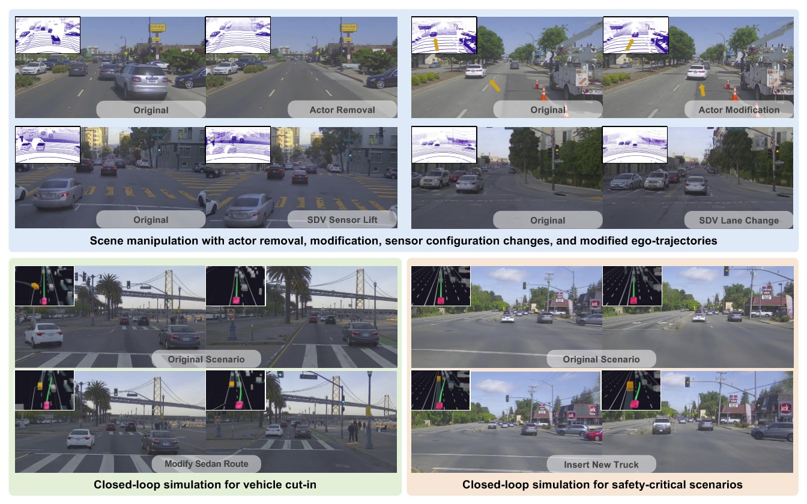
図1：上：UniSim は、データ収集プラットフォームで記録されたセンサデータを受け取り、操作可能なデジタルツインを作成する。下：UniSim は新しいシナリオに対して写実的で時間的に一貫したセンサシミュレーションを生成し、自律システムの閉ループ評価を可能にする。自律システムはシナリオと反応的に相互作用し、新しいセンサデータを受け取り、車線を変更する（計画軌跡の挿入図を参照）。図中の画像と LiDAR はすべて UniSim によるシミュレーションである。その他の結果はプロジェクトページ https://waabi.ai/research/unisim/ を参照されたい。
図中ラベル：Original＝原画像、Actor Removal＝アクターの除去、Actor Modification＝アクターの変更、SDV Sensor Lift＝SDV のセンサ位置の持ち上げ、SDV Lane Change＝SDV の車線変更、Scene manipulation with actor removal, modification, sensor configuration changes, and modified ego-trajectories＝アクターの除去・変更、センサ構成の変更、自車軌跡の変更によるシーン操作、Original Scenario＝元のシナリオ、Modify Sedan Route＝セダンの経路を変更、Insert New Truck＝新しいトラックを挿入、Closed-loop simulation for vehicle cut-in＝車両の割り込みに対する閉ループシミュレーション、Closed-loop simulation for safety-critical scenarios＝安全上重要なシナリオに対する閉ループシミュレーション
要旨
自律システムを厳密にテストすることは、安全な自動運転車（self-driving vehicle; SDV）を実現するうえで不可欠である。多くのシナリオは公道ではまれにしか起こらないため、現実世界で安全に収集できる範囲を超えて、安全上重要なシナリオを生成する必要がある。性能を正確に評価するには、SDV と他のアクターが各タイムステップで互いに相互作用する閉ループで、これらのシナリオ上の SDV をテストする必要がある。過去に記録された走行ログは、こうした新しいシナリオを構築するための豊富な資源となるが、閉ループ評価のためには、新しいシーン構成と SDV の判断に基づいてセンサデータを修正しなければならない。アクターが追加・除去されることがあり、既存のアクターと SDV の軌跡も元のログとは異なるものになるからである。本論文では、センサ搭載車両で取得された単一の記録ログを受け取り、それを写実的な閉ループのマルチセンサシミュレーションへと変換するニューラルセンサシミュレータ UniSim を提案する。UniSim は、シーン内の静的背景と動的アクターの両方を再構成するニューラル特徴グリッドを構築し、それらを合成して、アクターを追加・除去したり新しい位置に配置したりした状態で、新しい視点における LiDAR とカメラのデータをシミュレーションする。外挿された視点をよりうまく扱うために、動的物体に対する学習可能な事前分布を組み込み、畳み込みネットワークを利用して観測されていない領域を補完する。実験により、UniSim は下流タスクにおける領域ギャップの小さい写実的なセンサデータをシミュレーションできることを示す。UniSim を用いて、安全上重要なシナリオにおける自律システムの閉ループ評価を、あたかも現実世界にいるかのように実施できることを実証する。
1 はじめに
高速道路を走行中、左から来た車が突然あなたの車線に割り込んでくる。あなたは急ブレーキをかけ、事故は回避したものの、同乗者に不快な思いをさせてしまう。その出来事を頭の中で再生しながら、もし相手の車がもっと加速していたら、もし自分がもっと早く減速していたら、あるいはもっと快適な走行のために代わりに車線変更をしていたら、シナリオはどう展開しただろうかと考える。このような「what-if（もしも）」シナリオを単一の記録から生成できる能力があれば、安全な自動運転ソリューションの開発にとって画期的なものとなるだろう。残念ながらそのようなツールは存在せず、自動運転業界は主に、事前に記録された実世界のセンサデータ（すなわちログリプレイ）を用いるか、実世界でひたすら走行距離を重ねることでシステムをテストしている。前者では、元の記録と異なる新しいセンサデータが生成されないため、自律システムは行動を実行してその結果を観測することができない。一方、後者は安全でもなく、スケーラブルでも持続可能でもない。この現状は、忠実度が高く実世界の多様性を表現できる、新しい閉ループセンサシミュレーションシステムを必要としている。
本研究では、（取得したログを通じて）実世界の編集可能なデジタルツインを構築することを目指す。そこでは、シーン内の既存のアクターを変更・除去でき、新しいアクターを追加でき、新しい自律走行軌跡を実行できる。これにより自律システムはシミュレーションされた世界と相互作用でき、新しい位置と動的アクターの更新された状態に基づく新しいセンサ観測を閉ループ方式で受け取る。このようなシミュレータは、安全上の危険を伴わず、はるかに少ない資本で、あたかも実際に現実世界にいるかのように自動運転の性能を正確に測定できる。手作業で作成されたゲームエンジンベースの仮想世界［16,68］と比べて、これは閉ループ評価に向けた、よりスケーラブルで費用対効果が高く、写実的かつ多様な方法である。
この目標に向けて、自動運転のための写実的な閉ループのデータ駆動型センサシミュレーションシステム UniSim を提案する。UniSim は、単一の記録ログから、新しい視点および新しいシーン構成に対するマルチセンサデータを再構成・レンダリングする。観測は疎であり、しばしば制約された視点（例えば、道路に沿った直線的な軌跡）から取得されるため、この設定は非常に難しい。観測された視点からの外挿をよりうまく扱うために、従来のニューラルレンダリング手法に対する一連の改良を提案する。具体的には、静的シーンと動的エージェントを表現・合成するためにマルチ解像度のボクセルベースのニューラル場を活用し、特徴マップをボリュームレンダリングする。新しい視点をよりうまく扱い、シーンの文脈を取り込んでアーティファクトを減らすために、畳み込みネットワーク（CNN）が特徴マップをレンダリングして最終画像を形成する。動的エージェントについては、物体を補完して観測されていない領域をレンダリングするのに役立つニューラル形状事前分布を学習する。この疎なボクセルベースの表現を用いて、画像と LiDAR の両方の観測を統一的な枠組みのもとで効率的にシミュレーションする。SDV は頑健性のためにしばしば複数のセンサモダリティを使用するため、これは非常に有用である。
実験により、UniSim は大規模な動的走行シーンにおいて新しい視点でのカメラと LiDAR の観測を写実的にシミュレーションし、写実性で最先端（SoTA）の性能を達成することを示す。さらに、UniSim は検出、動き予測、動作計画という下流の自律タスクにおいて、既存のカメラシミュレーション手法よりも領域ギャップを小さくすることを確認する。また、UniSim を適用して学習データを拡張し、知覚モデルを改善する。重要な点として、写実的な安全上重要なシナリオにおける自律システムの閉ループ評価を初めて示し、SDV の性能をよりよく測定できるようにする。これは、より安全で効率的な自動運転開発を可能にするという UniSim の価値をさらに示すものである。
2 関連研究
ロボティクスのためのシミュレーション環境：ロボティクスのコミュニティには、より安全で高速なロボット開発のためにシミュレータを構築してきた長い歴史がある［15,31,37,49,77,88］。初期の研究は、パラメータ同定と制御器モデリングのためにロボットの動力学と物理的な力をモデル化することに焦点を当てていた［31,53］。その後、いくつかの研究がロボットの設計と動作計画を改善するための正確な物理エンジンを開発し［7,13,15,28,33］、把持［36］、ソフトロボティクス［27］、SDV［88］などの特定の領域向けのものも開発された。しかし、完全な自律システムのエンドツーエンドのテストを可能にするには、ロボットが周囲を知覚し、周囲と相互作用し、それに応じて計画できるように、3D 環境の写実的なセンサ観測もシミュレーションしなければならない［19］。従来のセンサシミュレーションシステムの多くは、小規模な屋内環境向けに 3D スキャンまたは手作業で構築した合成環境を用い［33,37,67］、ラスタライズやレイトレーシング［58,69］を行ってさまざまなセンサデータをシミュレーションする［20,22,30］。SDV のような高速ロボットについては、CARLA や AirSim などのシミュレータ［16,68］が同様の手法を適用した。しかし、シーン作成に多大な手作業を要するため、これらのシミュレータはテストしたいすべての領域にスケールすることが難しく、実世界と比べてアセットの多様性（例えば、道路、車両、植生）が限られ、自律システムのために大幅なドメイン適応を必要とする非写実的なセンサデータを生成してしまう［26,87］。
新規視点合成：近年の新規視点合成（novel view synthesis; NVS）の研究は、非常に写実的なセンサ観測を自動的に生成することに成功している［1,35,43,50,55,56,63,64］。こうした手法は、密に収集された観測画像の集合からシーン表現を学習し、近傍の未観測の視点からシーンをレンダリングすることを目指す。ある研究群は、幾何形状の再構成を行った後、入力画像のピクセル特徴を新しいカメラ視点へとワープ・集約し、それを学習ベースのモジュールで処理する［1,60,64,65］。別の研究群は、シーンをニューラル放射輝度場（neural radiance field; NeRF）として暗黙的に表現し、ニューラルネットワークでボリュームレンダリングを行う［4,50,79,93］。これらの手法は複雑な幾何形状と外観を表現でき、写実的なレンダリングを達成しているが、小規模な静的シーンに焦点を当てている。いくつかの表現［8,42,47,51,52,61,62,76,100］は、大規模で境界のない屋外シーンを扱うために、空間を分割してボリュームをより効率的にモデル化する。しかし、これらの研究は主に、画像が密に収集されており大半のテスト視点が学習視点に近い NVS タスクに焦点を当てており、また移動車両のような動的物体をレンダリングせずに静的シーンに焦点を当てている。これに対し、本研究は NVS 技術を拡張し、高速移動するプラットフォームで取得された単一の記録ログからセンサシミュレータを構築する。閉ループの自律システム評価を可能にするために、動的な交通シナリオの画像と LiDAR の観測を、新しい視点および変更されたシーン構成からレンダリングすることを目指す。
自動運転のためのデータ駆動型センサシミュレーション：過去のいくつかの研究は、コンピュータビジョン技術と実世界データを活用して自動運転用のセンサシミュレータを構築してきた。ある研究は、LiDAR を集約して物理ベースレンダリング用のテクスチャ付き幾何プリミティブを構築することで 3D 再構成を行うが［18,46,75,92］、主に LiDAR をシミュレーションするか、高解像度画像をモデル化できない。別の研究の流れは、物体の再構成と、既存の画像［10,80,86,93］や点群［17,81,94,95］への挿入を行うが、これらの手法は閉ループの相互作用のために新しい視点からセンサデータをレンダリングすることができない。DriveGAN［32］はシーンを分離された潜在コードとして表現し、微分可能な閉ループシミュレーションのためにニューラルネットワークで制御入力から映像を生成するが、写実性に限界があり、時間的に一貫していない。AADS［38］と VISTA 2.0［2,3,84］は、過去に収集されたセンサデータに対して画像ベースのワーピングまたはレイキャスティングを行うことで静的シーンの新しい視点をレンダリングするマルチセンサシミュレーションを実施し、その後 CAD アセットをセンサデータに挿入・ブレンドして新しいシナリオを作成する。これらの手法は有望ではあるが、挿入されたアクターとレンダリングされた新しい視点に視覚的なアーティファクトがあり、大きな領域ギャップをもたらす。Neural Scene Graphs（NSG）［56］と Panoptic Neural Fields（PNF）［35］は、静的シーンとエージェントを多層パーセプトロン（MLP）として表現し、シーンの写実的な画像をボリュームレンダリングする。しかし、単一の MLP では大規模なシーンのモデル化が難しい。これらの先行研究はまた、SDV が元の記録から大きく逸脱しないシーン編集や知覚タスクに焦点を当てている。これに対し本研究は、自律システムの閉ループ評価のためのマルチセンサシミュレーションに焦点を当て、外挿をよりうまく扱えるようにシステムを特に設計する。
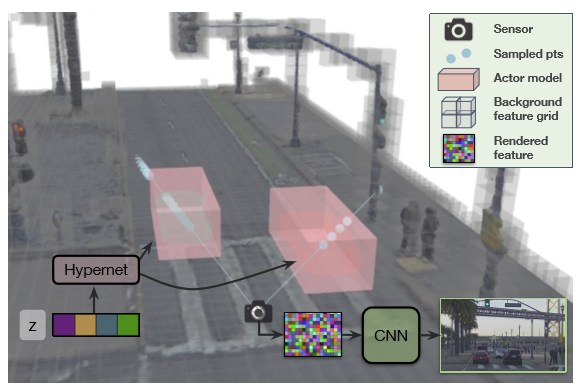
図2：提案手法の概要：3D シーンを静的背景（灰色）と動的アクターの集合（赤色）に分割する。静的背景と動的アクターのモデルそれぞれについてニューラル特徴場を問い合わせ、ボリュームレンダリングを行ってニューラル特徴記述子を生成する。静的シーンは疎な特徴グリッドでモデル化し、ハイパーネットワークを用いて学習可能な潜在変数から各アクターの表現を生成する。最後に、畳み込みネットワークを用いて特徴パッチを画像へとデコードする。
図中ラベル：Sensor＝センサ、Sampled pts＝サンプリング点、Actor model＝アクターモデル、Background feature grid＝背景特徴グリッド、Rendered feature＝レンダリングされた特徴、Hypernet＝ハイパーネットワーク、z＝潜在コード
3 ニューラルセンサシミュレーション
移動プラットフォームで取得されたカメラ画像と LiDAR 点群、および参照座標系におけるそれらの相対姿勢を含むログが与えられたとき、本研究の目標は、写実的なマルチモーダルセンサシミュレーションと関心のある反実仮想シナリオを生成できる、編集可能かつ制御可能なデジタルツインを構築することである。3D 世界は静的背景と移動するアクターの集合に分解できるという直観に基づいてモデルを構築する。各構成要素を効果的に分離してモデル化することで、アクターを操作して新しいシナリオを生成し、新しい視点からのセンサ観測をシミュレーションできる。この目標に向けて、環境を 1 回通過して取得されたセンサデータから、静的シーンと動的アクターの両方について形状と外観の表現を同時に学習する、ニューラルレンダリング型の閉ループシミュレータ UniSim を提案する。
本節では、まず提案手法の基本的な構成要素を概観する。次に、構成的（compositional）なシーン表現を提示し、背景モデルと動的アクターモデルの設計を詳述する。続いて、UniSim でシミュレーションされたセンサデータを生成する方法を説明する。最後に、実世界データからモデルを学習する方法を論じる。図2に提案手法の概要を示す。
3.1 準備
ニューラル特徴場：特徴場とは、3D 点 \(\mathbf{x} \in \mathbb{R}^3\) と視線方向 \(\mathbf{d} \in \mathbb{R}^2\) を、暗黙的な幾何 \(s \in \mathbb{R}\) と \(N_f\) 次元の特徴記述子 \(\mathbf{f} \in \mathbb{R}^{N_f}\) へ写像する連続関数 \(f\) を指す。この関数はしばしば、学習可能な重みを \(\theta\) とするニューラルネットワーク \(f_\theta : \mathbb{R}^3 \times \mathbb{R}^2 \to \mathbb{R} \times \mathbb{R}^{N_f}\) としてパラメータ化されるため、これをニューラル特徴場（neural feature field; NFF）と呼ぶ。NFF は既存のいくつかの研究［48,50］の上位集合とみなせる。暗黙的な幾何を体積密度 \(s \in \mathbb{R}^+\)、特徴記述子を RGB 放射輝度 \(\mathbf{f} \in \mathbb{R}^3\) として表現すれば、NFF は NeRF［50］になる。暗黙的な幾何を占有確率に制約すれば、NFF は占有関数［48］になる。重要な点として、NFF は自然に合成をサポートし［23,35,54］、比較的単純な複数の NFF を組み合わせて複雑なニューラル場を形成することができる。
マルチ解像度特徴グリッド：NFF の表現力と速度を向上させるために、過去の研究［12,51,74,98］は学習可能なマルチ解像度特徴グリッド \(\{\mathcal{G}^l\}_{l=1}^L\) をニューラルネットワーク \(f\) とさらに組み合わせた。具体的には、クエリ点 \(\mathbf{x} \in \mathbb{R}^3\) が与えられると、まず各レベルの 3D 特徴グリッドが三線形補間される。補間された特徴は視線方向 \(\mathbf{d} \in \mathbb{R}^2\) と連結され、得られた特徴が MLP ヘッドで処理されて幾何 \(s\) と特徴記述子 \(\mathbf{f}\) が得られる：
\[ s, \mathbf{f} = f\left(\{\mathtt{interp}(\mathbf{x}, \mathcal{G}^l)\}_{l=1}^L, \mathbf{d}\right). \tag{1} \]
これらのマルチスケール特徴は大域的な文脈と細部の両方を符号化し、元の入力 \(\mathbf{x}\) と比べてより豊かな情報を提供する。これによりより小さな \(f\) を用いることも可能になり、推論時間が大幅に短縮される［72,74］。実際には、固定数の特徴 \(\mathcal{F}\) を用いて特徴グリッドを最適化し、グリッドインデックスのハッシュ関数［51］により特徴グリッド \(\{\mathcal{G}^l\}_{l=1}^L\) を \(\mathcal{F}\) に写像する。以下では、\(\mathcal{F}\) と \(\{\mathcal{G}^l\}_{l=1}^L\) を区別せずに用いる。
3.2 構成的ニューラルシーン表現
本研究では、動的アクターと静的シーンを含む 3D 世界を最もよくモデル化する構成的シーン表現の構築を目指す。データ収集プラットフォームで取得された記録ログが与えられると、まず走行した領域にわたる 3D 空間ボリュームを定義する。このボリュームは、静的背景 \(\mathcal{B}\) と動的アクターの集合 \(\{\mathcal{A}_i\}_{i=1}^N\) から構成される。各動的アクターは寸法 \(\mathbf{s}_{\mathcal{A}_i} \in \mathbb{R}^3\) のバウンディングボックスとしてパラメータ化され、その軌跡は SE(3) 姿勢の系列 \(\{\mathbf{T}_{\mathcal{A}_i}^t\}_{t=1}^T\) で定義される。次に、静的背景と動的アクターを、それぞれ別個のマルチ解像度特徴グリッドと NFF でモデル化する。静的背景は世界座標系で表現する。各アクターは物体重心座標系（バウンディングボックスの重心で定義される）で表現し、その特徴グリッドを世界座標へ変換して背景と合成する。これにより各アクターの 3D 運動を分離し、形状と外観の表現に集中できる。高品質な幾何を学習するために［82,96］、暗黙的な幾何表現 \(s\) として符号付き距離関数（SDF）を採用する。以下、各構成要素をより詳しく説明する。
疎な背景シーンモデル：静的シーン全体を、マルチ解像度特徴グリッド \(\mathcal{F}_{\text{bg}}\) と MLP ヘッド \(f_{\text{bg}}\) でモデル化する。自動運転のログはしばしば数百〜数千メートルに及ぶため、密な高解像度ボクセルグリッドを維持することは計算量とメモリの点で高コストである。そこで、LiDAR 観測からの幾何事前情報を利用して表面近傍のボクセルを特定し、それらの特徴のみを最適化する。具体的には、まず各フレームの静的 LiDAR 点群を集約して、密な 3D シーン点群を構築する。次にシーン点群をボクセル化し、シーンの占有グリッド \(\mathbf{V}_{\text{occ}}\) を得る。最後に、占有グリッドにモルフォロジー膨張を適用し、3D 空間を自由空間 対 表面近傍空間に粗く分割する。静的背景はしばしば自由空間が大部分を占めるため、これにより特徴グリッドを大幅に疎にし、計算コストを削減できる。この幾何事前情報により、シーンの 3D 構造をよりよくモデル化することもでき、これは大きな外挿を伴う新しい視点をシミュレーションする際に重要である。空のような遠方の領域をモデル化するために、［5,100］に従って背景シーンモデルを境界のないシーンへ拡張する。
汎化アクターモデル：アクターをモデル化する単純な方法の 1 つは、各アクター \(\mathcal{A}_i\) を特徴グリッド \(\mathcal{F}_{\mathcal{A}_i}\) でパラメータ化し、すべてのアクターで共有の MLP ヘッド \(f_{\mathcal{A}}\) を採用することである。この設計では、個々の特徴グリッドがインスタンス固有の幾何と外観を符号化し、共有ネットワークがそれらを下流の用途のために同じ特徴空間へ写像する。残念ながら、このような設計は密な交通シーンに対して大きなメモリを必要とし、実際にはしばしば過学習を招く。すなわち、特徴グリッドが未観測の視点にうまく汎化しない。このような制約を克服するために、すべての特徴グリッドのパラメータに対してハイパーネットワーク［24］を学習することを提案する。直観としては、異なるアクターは異なる視点から観測されるため、それらの特徴グリッドは異なる領域で有益な情報を持つ。それらに対する事前分布を学習することで、特徴間の相関を捉え、見えている部分から見えていない部分を推論できる。具体的には、各アクター \(\mathcal{A}_i\) を低次元の潜在コード \(\mathbf{z}_{\mathcal{A}_i}\) でモデル化し、特徴グリッド \(\mathcal{F}_{\mathcal{A}_i}\) を回帰するハイパーネットワーク \(f_{\mathbf{z}}\) を学習する：
\[ \mathcal{F}_{\mathcal{A}_i} = f_{\mathbf{z}}(\mathbf{z}_{\mathcal{A}_i}). \tag{2} \]
背景と同様に、共有の MLP ヘッド \(f_{\mathcal{A}}\) を採用し、式1により各サンプリング 3D 点における幾何と特徴記述子を予測する。学習中は、アクターの潜在コード \(\{\mathbf{z}_{\mathcal{A}_i}\}\) を同時に最適化する。
ニューラル特徴場の合成：剛体物体をシーンに合成する研究［23,56］に着想を得て、まず前景アクターの物体中心のニューラル場を、所望の姿勢（例えば、再構成には \(\mathbf{T}_{\mathcal{A}_i}^t\) を用いる）で世界座標へ変換する。静的背景は疎な特徴グリッドであるため、次に自由空間をアクターの特徴場で単純に置き換える。この単純な操作により、シーン内のアクターを挿入・除去・操作することができる。
3.3 マルチモーダルセンサシミュレーション
静的世界と動的世界の合成シーン表現が得られたので、次のステップはそれを関心のあるデータモダリティへとレンダリングすることである。本研究では、現代の SDV が用いる 2 つの主要なセンサモダリティであるカメラ画像と LiDAR 点群に焦点を当てる。
カメラシミュレーション：視点合成と生成における近年の成功［9,54］に倣い、効率的で写実的な画像シミュレーションのために、ボリュームレンダリングとニューラルレンダリングのハイブリッドな枠組みを採用する。カメラ中心 \(\mathbf{o}\) からピクセル中心を通って方向 \(\mathbf{d}\) に放たれる光線 \(\mathbf{r}(t) = \mathbf{o} + t\mathbf{d}\) が与えられると、まず光線に沿って 3D 点の集合をサンプリングし、その特徴と幾何を抽出する（式1）。次にサンプルを集約し、ボリュームレンダリングによってピクセルごとの特徴記述子を得る：
\[ \mathbf{f}(\mathbf{r}) = \sum_{i=1}^{N_{\mathbf{r}}} w_i \mathbf{f}_i, \quad w_i = \alpha_i \prod_{j=1}^{i-1}(1 - \alpha_j). \tag{3} \]
ここで \(\alpha_i \in [0, 1]\) は不透明度を表し、近似ステップ関数 \(\alpha = 1/(1 + \exp(\beta \cdot s))\) を用いて SDF \(s_i\) から導出できる。\(\beta\) は傾きを制御するハイパーパラメータである。すべてのカメラ光線をボリュームレンダリングして、2D 特徴マップ \(\mathbf{F} \in \mathbb{R}^{H_f \times W_f \times N_f}\) を生成する。次に 2D CNN \(g_{\text{rgb}}\) を用いて、特徴マップを RGB 画像 \(\mathbf{I}_{\text{rgb}}\) へとレンダリングする：
\[ g_{\text{rgb}} : \mathbf{F} \in \mathbb{R}^{H_f \times W_f \times N_f} \to \mathbf{I}_{\text{rgb}} \in \mathbb{R}^{H \times W \times 3}. \tag{4} \]
実際には、特徴マップの空間解像度 \(H_f \times W_f\) をレンダリング画像の解像度 \(H \times W\) より小さくし、アップサンプリングを CNN \(g_{\text{rgb}}\) に任せる。これにより光線クエリの量を大幅に削減できる。
LiDAR シミュレーション：LiDAR 点群は 3D（深度）と強度（反射率）の情報を符号化しており、いずれも式3と同様の方法でシミュレーションできる。LiDAR は飛行時間（time-of-flight）方式のパルスベースのセンサであると仮定し、向きを持つ LiDAR レーザビームが送信するパルスを光線の集合としてモデル化する。記法をやや流用し、\(\mathbf{r}(t) = \mathbf{o} + t\mathbf{d}\) をシミュレーション対象の LiDAR センサから投射される光線とする。\(\mathbf{o}\) を LiDAR の中心、\(\mathbf{d}\) を対応するビームの正規化ベクトルとする。次に、サンプリングされた 3D 点の期待深度を計算することで深度計測をシミュレーションする：
\[ D(\mathbf{r}) = \sum_{i=1}^{N_{\mathbf{r}}} w_i t_i. \tag{5} \]
LiDAR の強度については、光線の特徴を（式3を用いて）ボリュームレンダリングし、それを MLP 強度デコーダ \(g_{\text{int}}\) に通して強度 \(l^{\text{int}}(\mathbf{r}) = g_{\text{int}}(\mathbf{f}(\mathbf{r}))\) を予測する。
3.4 学習
センサ観測とレンダリング出力の差を最小化することで、すべての特徴グリッド \(\mathcal{F}_*\)（潜在コード \(\{\mathbf{z}_{\mathcal{A}_i}\}\) を含む）、ハイパーネットワーク \(f_{\mathbf{z}}\)、MLP ヘッド（\(f_{\text{bg}}, f_{\mathcal{A}}\)）、およびデコーダ（\(g_{\text{rgb}}, g_{\text{int}}\)）を同時に最適化する。また、基礎となる幾何が実世界の制約を満たすように正則化する。目的関数全体は次のとおりである：
\[ \mathcal{L} = \mathcal{L}_{\text{rgb}} + \lambda_{\text{lidar}}\mathcal{L}_{\text{lidar}} + \lambda_{\text{reg}}\mathcal{L}_{\text{reg}} + \lambda_{\text{adv}}\mathcal{L}_{\text{adv}}. \]
以下、各項をより詳しく論じる。
画像シミュレーション \(\mathcal{L}_{\text{rgb}}\)：この目的関数は \(\ell_2\) 測光損失と知覚損失［83,101］からなり、いずれも観測画像とシミュレーション結果の間で測定される。損失はパッチ単位で計算する：
\[ \mathcal{L}_{\text{rgb}} = \frac{1}{N_{\text{rgb}}} \sum_{i=1}^{N_{\text{rgb}}} \left( \left\| \mathbf{I}_i^{\text{rgb}} - \hat{\mathbf{I}}_i^{\text{rgb}} \right\|_2 + \lambda \sum_{j=1}^{M} \left\| V^j(\mathbf{I}_i^{\text{rgb}}) - V^j(\hat{\mathbf{I}}_i^{\text{rgb}}) \right\|_1 \right), \tag{6} \]
ここで \(\mathbf{I}_i^{\text{rgb}} = f_{\text{rgb}}(\mathbf{F}_i)\) はレンダリングされた画像パッチ（式4）、\(\hat{\mathbf{I}}_i^{\text{rgb}}\) は対応する観測画像パッチである。\(V^j\) は事前学習済み VGG ネットワーク［70］の第 \(j\) 層を表す。（訳注：式4ではデコーダを \(g_{\text{rgb}}\) と表記しているが、ここでは \(f_{\text{rgb}}\) と表記されている。同一の CNN デコーダを指すと考えられる。）
LiDAR シミュレーション \(\mathcal{L}_{\text{lidar}}\)：この目的関数は、観測された LiDAR 点群とシミュレーションされた点群との間の \(\ell_2\) 誤差を測定する。具体的には、深度と強度の差を計算する：
\[ \mathcal{L}_{\text{lidar}} = \frac{1}{N} \sum_{i=1}^{N} \left( \left\| D(\mathbf{r}_i) - D_i^{\text{obs}} \right\|_2 + \left\| l^{\text{int}}(\mathbf{r}_i) - \hat{l}_i^{\text{int}} \right\|_2 \right). \tag{7} \]
LiDAR 観測にはノイズが含まれるため、外れ値を除去し、モデルが信頼できる教師信号に集中するよう促す。実際には、各バッチ内で深度誤差が最も小さい 95% の光線を最適化する。
正則化 \(\mathcal{L}_{\text{reg}}\)：学習される表現に、さらに 2 つの制約を追加で課す。第一に、学習されたサンプル重みの分布 \(w\)（式3）が表面の周辺に集中するよう促す。第二に、基礎となる SDF \(s\) がアイコナール方程式を満たすよう促す。これはネットワークの最適化が滑らかなゼロ等値面を見つけるのに役立つ［21］：
\[ \mathcal{L}_{\text{reg}} = \frac{1}{N} \sum_{i=1}^{N} \left( \sum_{\tau_{i,j} \gt \epsilon} \|w_{ij}\|_2 + \sum_{\tau_{i,j} \lt \epsilon} \left( \|\nabla s(\mathbf{x}_{ij})\|_2 - 1 \right)^2 \right), \tag{8} \]
ここで \(\tau_{i,j} = |t_{ij} - D_i^{\text{gt}}|\) は、サンプル \(\mathbf{x}_{ij}\) と対応する LiDAR 観測 \(D_i^{\text{gt}}\) との間の距離である。
敵対的損失 \(\mathcal{L}_{\text{adv}}\)：未観測の視点における写実性を向上させるために、観測された視点と未観測の視点におけるシミュレーション画像を区別する識別器 CNN \(\mathcal{D}_{\text{adv}}\) を学習する。具体的には、画像パッチをレンダリングする光線の集合を \(\mathbf{R} = \{\mathbf{r}(\mathbf{o}, \mathbf{d}_j)\}_{j=1}^{P \times P}\) と表し、光線の原点をランダムにずらして未観測の光線パッチ \(\mathbf{R}' = \{\mathbf{r}(\mathbf{o} + \epsilon, \mathbf{d}_j)\}_{j=1}^{P \times P}\) を作成する。ここで \(\epsilon \in \mathcal{N}(0, \sigma)\) である。識別器 CNN \(\mathcal{D}_{\text{adv}}\) は次を最小化する：
\[ -\frac{1}{N_{\text{adv}}} \sum_{i=1}^{N_{\text{adv}}} \log \mathcal{D}_{\text{adv}}(\mathbf{I}_i^{\text{rgb},\mathbf{R}}) + \log(1 - \mathcal{D}_{\text{adv}}(\mathbf{I}_i^{\text{rgb},\mathbf{R}'})), \tag{9} \]
ここで \(\mathbf{I}_i^{\text{rgb},\mathbf{R}} = f_{\text{rgb}}(\mathbf{F}(\mathbf{R}_i))\) と \(\mathbf{I}_i^{\text{rgb},\mathbf{R}'} = f_{\text{rgb}}(\mathbf{F}(\mathbf{R}'_i))\) は、それぞれ観測された視点と未観測の視点でレンダリングされた画像パッチである。次に、未観測の視点での写実性を向上させるように CNN RGB デコーダ \(g_{\text{rgb}}\) とニューラル特徴場を学習するための敵対的損失 \(\mathcal{L}_{\text{adv}}\) を次のように定義する：
\[ \mathcal{L}_{\text{adv}} = \frac{1}{N_{\text{adv}}} \sum_{i=1}^{N_{\text{adv}}} \log(1 - \mathcal{D}_{\text{adv}}(\mathbf{I}_i^{\text{rgb},\mathbf{R}'})). \tag{10} \]
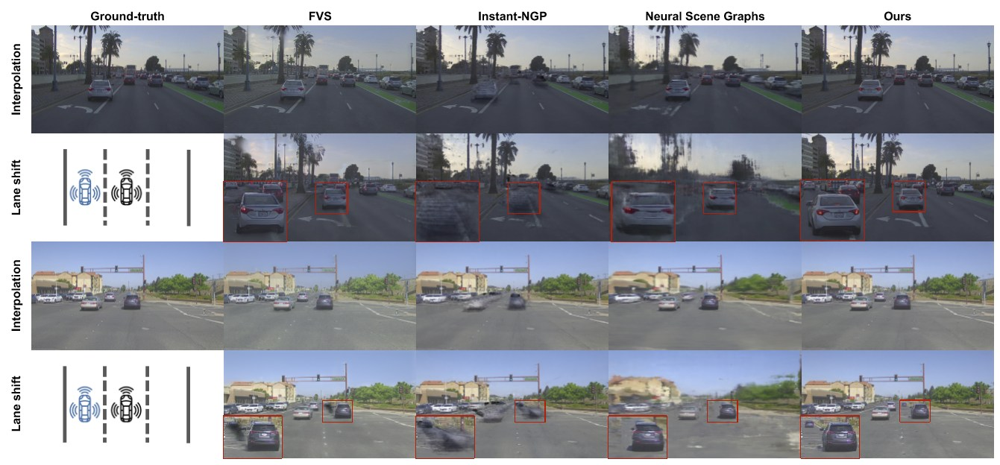
図3：定性的比較。内挿（1 行目、3 行目）と車線シフト（2 行目、4 行目）の両方のテスト設定におけるシミュレーション結果を示す。
図中ラベル：Ground-truth＝正解、Ours＝提案手法、Interpolation＝内挿、Lane shift＝車線シフト
| 手法 | 内挿 | 車線シフト | |||
|---|---|---|---|---|---|
| PSNR↑ | SSIM↑ | LPIPS↓ | FID↓ @ 2m | FID↓ @ 3m | |
| FVS［64］ | 21.09 | 0.700 | 0.299 | 112.6 | 135.8 |
| NSG［56］ | 20.74 | 0.600 | 0.556 | 319.2 | 343.0 |
| Instant-NGP［51］ | 24.03 | 0.708 | 0.451 | 192.8 | 220.1 |
| Ours | 25.63 | 0.745 | 0.288 | 74.7 | 97.5 |
表1：最先端手法との画像の比較
| 手法 | 内挿 | 車線シフト | |||
|---|---|---|---|---|---|
| PSNR↑ | SSIM↑ | LPIPS↓ | FID↓ @ 2m | FID↓ @ 3m | |
| NFF only（NFF のみ） | 24.93 | 0.717 | 0.393 | 153.7 | 173.5 |
| + Actor model（アクターモデル） | 25.80 | 0.744 | 0.364 | 84.1 | 111.8 |
| + CNN | 25.99 | 0.762 | 0.341 | 78.8 | 103.3 |
| + VGG & GAN loss（VGG・GAN 損失） | 25.63 | 0.745 | 0.288 | 74.7 | 97.5 |
表2：UniSim の改良要素のアブレーション
| \(\ell_2\) 誤差の中央値（m）↓ | ヒット率↑ | 強度 RMSE↓ | |
|---|---|---|---|
| LiDARsim［46］ | 0.11 | 92.2% | 0.091 |
| Ours | 0.10 | 99.6% | 0.065 |
表3：最先端手法との LiDAR の比較
実装の詳細：AABB（軸平行バウンディングボックス）の光線–ボックス交差判定［45］を用いて、レンダリングされる光線に沿ったアクターを特定する。光線に沿って点をサンプリングする際は、適切な解像度を確保するために、背景領域では大きなステップ幅を、交差したアクターモデルでは小さなステップ幅を採用する。シーンの占有グリッド \(\mathbf{V}_{\text{occ}}\) を活用して、自由空間での点サンプリングをスキップする。学習中は、初期入力のノイズを考慮するためにアクターの軌跡も最適化する。車両アクターについては、それらが長さ方向に沿って対称であるという形状事前知識も活用する。
4 実験
本節では、まず実験設定を紹介し、次に提案モデルを最先端手法と比較してセンサシミュレーションの写実性と実データとの領域ギャップを評価し、さらにモデルの構成要素をアブレーションする。続いて、提案手法が車両検出を改善するための多様なセンサシミュレーションを生成できることを示す。最後に、実データのみで学習された自律システムを閉ループで評価するために UniSim を用いることを実証する。
4.1 実験の詳細
データセット：公開されている PandaSet［89］で提案手法を評価する。PandaSet にはサンフランシスコの市街地で取得された 103 の走行シーンが含まれる。各シーンは 8 秒間（80 フレーム、10hz でサンプリング）からなり、前方向きの広角カメラ（1920×1080）で撮影された画像と、360° 回転型 LiDAR による点群で構成される。
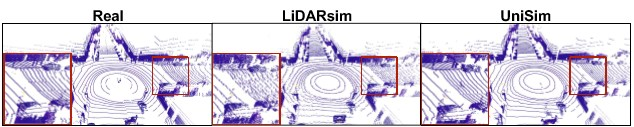
図4：LiDAR シミュレーションの比較。UniSim は［46］と比べて、ノイズが少なくビームリングがより連続的で、実際の LiDAR により近い、忠実度の高い LiDAR シミュレーションを生成する。
図中ラベル：Real＝実データ
ベースライン：提案モデルをいくつかの SoTA 手法と比較する。FVS［64］は、再構成された幾何（本実装では集約した LiDAR）を「プロキシ」として用いて入力画像のピクセルを新しいカメラ視点へ再投影し、ニューラルネットワークでそれらをブレンドする NVS 手法である。FVS を拡張して動的アクターをモデル化できるようにした。Instant-NGP［51］は、コンパクトなシーン表現と効率的なレンダリングのためにマルチ解像度ハッシュ符号化を採用した NeRF ベースの手法である。より良い幾何と外挿のために LiDAR 深度による教師信号を追加して拡張した。NSG［56］は、静的背景と各動的アクターを別々の NeRF 表現でモデル化するカメラシミュレーション手法である。詳細は補足資料を参照されたい。
4.2 UniSim の制御性
まず図1において、閉ループセンサシミュレーションに必要なあらゆる機能を実行できる UniSim の能力を示す。元のシーンをレンダリングできるだけでなく、アクターと背景を分解した表現のおかげで、すべてのアクターを除去したり、その位置を変更したりすることもできる。強化された外挿能力により、SDV の位置を変更したり、新しいセンサ構成をテストしたりできる。高速道路のシーンを含むさらなる結果は補足資料を参照されたい。
4.3 写実性の評価
センサシミュレーションは、近傍の視点を再構成するだけでなく、大きく異なる視点においても写実的なデータを生成すべきである。ここでは両方の設定を評価する。他の NVS ベンチマーク［41］と同様に、センサデータを 2 分の 1 にサブサンプリングし、1 フレームおきに学習して残りのフレームでテストする。これを「内挿」テストと呼ぶ。PSNR、SSIM［85］、LPIPS［101］を報告する。また、左右に 2 m または 3 m 横方向にシフトした新しい軌跡をシミュレーションすることで外挿も評価する。これを「車線シフト」テストと呼ぶ。正解データが得られないため、FID［25］を報告する。
カメラシミュレーション：表1に、SoTA 手法に対する画像類似度の指標を報告する。ベースラインである NSG の計算コストのため、評価には 10 シーンを選んだ。提案手法はすべての指標でベースラインを上回り、その差は外挿設定でより顕著である。内挿設定では FVS は LPIPS で、InstantNGP は PSNR で良好な性能を示すが、いずれも外挿された視点でのレンダリングに困難を抱える。図3に定性的な結果を示す。NSG は動的アクターについてはまずまずの結果を生成するが、疎なマルチプレーン表現のため、大規模な静的シーンでは失敗する。UniSim がベースラインよりも写実的であることに注目されたい。
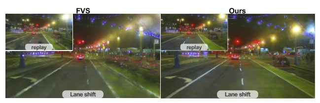
図5：リプレイ設定と車線シフト設定における Real2Sim の定性的結果。
図中ラベル：Ours＝提案手法、replay＝リプレイ、Lane shift＝車線シフト
| 手法 | ログリプレイ | 車線シフト | ||
|---|---|---|---|---|
| Real2Sim | Sim2Real | Real2Sim | Sim2Real | |
| FVS［64］ | 36.9 | 38.7 | 30.3 | 32.2 |
| Instant-NGP［51］ | 22.6 | 34.0 | 18.1 | 26.5 |
| Ours | 40.2 | 39.9 | 37.0 | 37.1 |
表4：検出における領域ギャップ（mAP）。Real2Real = 40.9。
| Instant-NGP［51］ | FVS［64］ | Ours | |
|---|---|---|---|
| Sim | 32.4 | 39.2 | 41.4 |
| Real + Sim | 40.1 | 41.1 | 42.9 |
表5：シミュレーションによるデータ拡張（mAP）。Real2Real = 40.9。
| Det. Agg.（検出一致率）↑ | Pred. ADE（予測 ADE）↓ | Plan Cons.（計画一貫性）↓ | |
|---|---|---|---|
| FVS［64］ | 0.80 | 2.35 | 6.15 |
| Instant-NGP［51］ | 0.42 | 3.24 | 13.44 |
| Ours | 0.82 | 1.68 | 6.09 |
表6：開ループの Real2Sim 自律システム評価
アブレーション：表2で、いくつかの主要な構成要素の有効性を検証する。アクターモデルと CNN デコーダはいずれも、ニューラル特徴グリッドのベースモデルに対して全体的な性能を向上させる。CNN は、空間的な関係の推論によって全体的な画質を向上させ、モデルの容量を増やすため、外挿設定で特に効果的である。知覚損失と敵対的損失を追加すると、内挿ではわずかに性能が低下するが、車線シフトの結果は改善する。さらなる視覚的結果は補足資料を参照されたい。
LiDAR シミュレーション：LiDAR シミュレーションの忠実度も評価し、SoTA 手法である LiDARsim［46］と比較する。LiDARsim については、すべての学習フレームを用いてサーフェル（surfel）アセットを再構成し、テストフレームにおける元のシナリオ内にアクターを配置して、レイキャスティングを行う。両手法とも、実際の LiDAR の光線を用いてシミュレーション点群を生成する。対応するシミュレーション点を持つ実 LiDAR 点の割合（すなわちヒット率）、光線ごとの \(\ell_2\) 誤差の中央値、および強度シミュレーションの平均誤差を評価する。表3に示すとおり、UniSim はすべての指標で LiDARsim を上回っており、より正確でカバレッジが優れていることを示唆している。図4に視覚的な比較を示す。追加の自律システムの結果と定性的な例は補足資料を参照されたい。
4.4 知覚の評価と学習
画像類似度に加えて、センサシミュレーションは自律システムがどのように知覚するかという観点でも写実的であるべきである。UniSim が知覚タスクの領域ギャップを縮小するかどうかを検証するために、SoTA のカメラベースの鳥瞰図（BEV）検出モデル BEVFormer［40］を活用した。2 つの設定を検討する：（a）Real2Sim：実データで学習した知覚モデルをシミュレーションデータで評価する。（b）Sim2Real：シミュレーションデータで知覚モデルを学習し、実データでテストする。具体的には、Real2Sim では 24 本のシミュレーション検証ログで実データのモデルを評価し、Sim2Real では 79 本のシミュレーション学習ログで知覚モデルを学習する。
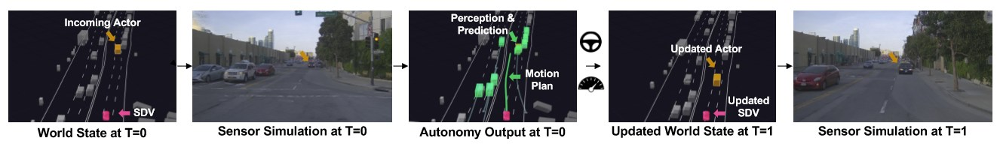
図6：閉ループ評価。左から右へ：UniSim を用いると、安全上重要なシナリオ（例えば、向かってくるアクター）を作成し、センサデータをシミュレーションし、それに対して自律システムを実行し、SDV の視点と他のアクターの位置を更新し、新しいセンサデータをシミュレーションできる。
図中ラベル：Incoming Actor＝向かってくるアクター、World State at T=0＝T=0 における世界状態、Sensor Simulation at T=0＝T=0 におけるセンサシミュレーション、Perception & Prediction＝知覚と予測、Motion Plan＝動作計画、Autonomy Output at T=0＝T=0 における自律システムの出力、Updated Actor＝更新されたアクター、Updated SDV＝更新された SDV、Updated World State at T=1＝T=1 における更新された世界状態、Sensor Simulation at T=1＝T=1 におけるセンサシミュレーション
リプレイと車線シフトの両方のテスト設定を検討する。リプレイでは、すべてのアクターと SDV を元の軌跡で再生する。車線シフトでは、SDV の軌跡を横方向に 2 m シフトし、外挿された視点で画像をシミュレーションする。検出の平均適合率の平均（mAP）を報告する。
シミュレーションにおける領域ギャップ：表4に示すとおり、提案手法は Real2Sim と Sim2Real の両設定、およびリプレイと車線シフトの両設定において最小の領域ギャップを達成する。一方、他の既存手法では領域ギャップが大きくなり、自律システムの評価と学習への適用が妨げられる。これは、UniSim とベースラインとの性能差がより大きい、より困難な車線シフト設定で特に顕著である。図5に、FVS［64］と比較した、リプレイ設定と車線シフト設定の両方における Real2Sim の検出性能を示す。
シミュレーションデータによるデータ拡張：次に、シミュレーションデータを学習に用いたときに性能が向上するかどうかを調べる。具体的には、PandaSet のすべての学習ログを用いてシミュレーションのバリエーション（リプレイ、0.5 m および 2 m の車線シフト）を生成し、検出器を学習する。表5に示すとおり、UniSim のデータのみを用いて知覚モデルを学習すると、すべての実データで学習するよりもさらに良い性能となる。なお、レンダリングする視点を増やしているだけで、内容は変更していない点に注意されたい。次に、実データとシミュレーションデータを組み合わせて検出器を再学習する。表5は、UniSim によるデータ拡張が大きな性能向上をもたらすことを示している。これに対し、ベースラインによるデータ拡張では向上はわずかであるか、性能を損なう。
4.5 UniSim による完全な自律システムの評価
領域ギャップの評価：センサシミュレーションは知覚タスクだけでなく、動き予測や計画などの下流タスクにも影響する。実データで学習した自律システムを元のシナリオのシミュレーション画像で評価することで、領域ギャップの指標を報告する。評価対象の自律システムはモジュールベースのシステムであり、知覚モジュールとして、前方カメラ画像を入力として BEV 検出を出力する BEVFormer［40］を用い、その検出を貪欲な対応付けにより時間方向に照合してトラックを生成する。これらは、BEV トラックと地図ラスタを入力としてバウンディングボックスと 6 秒間の軌跡予測を出力する動き予測モデル［14］に入力される。最後に、SoTA のサンプリングベースの動作計画器［66］が予測出力と地図を受け取って走行操作を計画する。表6に、開ループの自律システム指標（IoU 0.3 における検出一致率、予測の平均変位誤差（ADE）、5 秒における動作計画の一貫性）を報告する。他の手法と比べて、提案手法は最小の領域ギャップを持つ。詳細は補足資料を参照されたい。
閉ループシミュレーション：UniSim を用いると、新しいシナリオを作成し、センサデータをシミュレーションし、自律システムを実行し、アクターの状態を反応的に、また SDV の位置を更新し、次のタイムステップを実行できる（図6を参照）。これにより、同じシナリオに対して実世界でどのように振る舞うかという観点で、SDV の性能をより正確に測定できる。図1は、アクターが自車線に割り込んでくる、あるいは対向するアクターが自車線に入ってくるといった安全上重要なシナリオにおける、自律システムの追加のシミュレーションを示している。SDV はその後車線変更を行い、UniSim を用いればシナリオ全体を通してセンサデータを写実的にシミュレーションできる。完全な映像は補足動画を参照されたい。
5 結論
本論文では、移動プラットフォームで収集された実世界のシナリオを活用して、自律システムをテストするための忠実度の高い仮想世界を構築した。この目標に向けて、LiDAR とカメラのデータ系列を入力として受け取り、シーン内の動的アクターと静的背景を分解・再構成できるニューラルセンサシミュレータ UniSim を提案した。これにより新しいシナリオを作成し、それらの新しいシナリオのセンサ観測を新しい視点からレンダリングできる。UniSim は SoTA を上回り、はるかに小さい領域ギャップで写実的なセンサデータを生成する。さらに、UniSim を用いて、新しい安全上重要なシナリオ上で自律システムを閉ループで評価できることを実証した。このようなシミュレータは、安全上の危険を伴わず、はるかに少ない資本で、あたかも実際に現実世界にいるかのように自動運転の性能を正確に測定できる。UniSim により、より安全な自律システムをより効率的かつ安全に開発できるようになることを期待する。今後の課題には、シーンの照明［6,71,102］、天候［39］、関節を持つアクター［80］の明示的なモデル化と操作が含まれる。
謝辞：深い議論と建設的なフィードバックをいただいた Ioan-Andrei Barsan に感謝する。貴重な支援とサポートをいただいた Waabi チームに感謝する。
参考文献
参考文献は原文のまま掲載した（各項目末尾の被引用ページへのリンク番号は省略した）。
- Kara-Ali Aliev, Artem Sevastopolsky, Maria Kolos, Dmitry Ulyanov, and Victor Lempitsky. Neural point-based graphics. In ECCV, 2020.
- Alexander Amini, Igor Gilitschenski, Jacob Phillips, Julia Moseyko, Rohan Banerjee, Sertac Karaman, and Daniela Rus. Learning robust control policies for end-to-end autonomous driving from data-driven simulation. IEEE RA-L, 2020.
- Alexander Amini, Tsun-Hsuan Wang, Igor Gilitschenski, Wilko Schwarting, Zhijian Liu, Song Han, Sertac Karaman, and Daniela Rus. VISTA 2.0: An open, data-driven simulator for multimodal sensing and policy learning for autonomous vehicles. In ICRA, 2022.
- Jonathan T Barron, Ben Mildenhall, Matthew Tancik, Peter Hedman, Ricardo Martin-Brualla, and Pratul P Srinivasan. Mip-NeRF: A multiscale representation for anti-aliasing neural radiance fields. In ICCV, 2021.
- Jonathan T Barron, Ben Mildenhall, Dor Verbin, Pratul P Srinivasan, and Peter Hedman. Mip-NeRF 360: Unbounded anti-aliased neural radiance fields. In CVPR, 2022.
- Mark Boss, Varun Jampani, Raphael Braun, Ce Liu, Jonathan Barron, and Hendrik Lensch. Neural-PIL: Neural pre-integrated lighting for reflectance decomposition. 2021.
- Greg Brockman, Vicki Cheung, Ludwig Pettersson, Jonas Schneider, John Schulman, Jie Tang, and Wojciech Zaremba. OpenAI gym. arXiv, 2016.
- Rohan Chabra, Jan E Lenssen, Eddy Ilg, Tanner Schmidt, Julian Straub, Steven Lovegrove, and Richard Newcombe. Deep local shapes: Learning local sdf priors for detailed 3d reconstruction. In ECCV, 2020.
- Eric R Chan, Connor Z Lin, Matthew A Chan, Koki Nagano, Boxiao Pan, Shalini De Mello, Orazio Gallo, Leonidas J Guibas, Jonathan Tremblay, Sameh Khamis, et al. Efficient geometry-aware 3D generative adversarial networks. In CVPR, 2022.
- Yun Chen, Frieda Rong, Shivam Duggal, Shenlong Wang, Xinchen Yan, Sivabalan Manivasagam, Shangjie Xue, Ersin Yumer, and Raquel Urtasun. Geosim: Realistic video simulation via geometry-aware composition for self-driving. In CVPR, 2021.
- Zhiqin Chen, Thomas Funkhouser, Peter Hedman, and Andrea Tagliasacchi. Mobilenerf: Exploiting the polygon rasterization pipeline for efficient neural field rendering on mobile architectures. arXiv, 2022.
- Julian Chibane, Thiemo Alldieck, and Gerard Pons-Moll. Implicit functions in feature space for 3D shape reconstruction and completion. In CVPR, 2020.
- Erwin Coumans and Yunfei Bai. PyBullet, a python module for physics simulation for games, robotics and machine learning. 2016.
- Henggang Cui, Vladan Radosavljevic, Fang-Chieh Chou, Tsung-Han Lin, Thi Nguyen, Tzu-Kuo Huang, Jeff Schneider, and Nemanja Djuric. Multimodal trajectory predictions for autonomous driving using deep convolutional networks. ICRA, 2019.
- Rosen Diankov and James Kuffner. OpenRAVE: A planning architecture for autonomous robotics. Robotics Institute, Pittsburgh, PA, Tech. Rep. CMU-RI-TR-08-34, 2008.
- Alexey Dosovitskiy, German Ros, Felipe Codevilla, Antonio Lopez, and Vladlen Koltun. CARLA: An open urban driving simulator. CoRL, 2017.
- Jin Fang, Dingfu Zhou, Feilong Yan, Tongtong Zhao, Feihu Zhang, Yu Ma, Liang Wang, and Ruigang Yang. Augmented LiDAR simulator for autonomous driving. IEEE RA-L, 2020.
- Jin Fang, Xinxin Zuo, Dingfu Zhou, Shengze Jin, Sen Wang, and Liangjun Zhang. LiDAR-Aug: A general rendering-based augmentation framework for 3D object detection. In CVPR, 2021.
- James J Gibson. The ecological approach to visual perception: classic edition. 2014.
- Adam A Goodenough and Scott D Brown. Dirsig 5: core design and implementation. In Algorithms and Technologies for Multispectral, Hyperspectral, and Ultraspectral Imagery XVIII, 2012.
- Amos Gropp, Lior Yariv, Niv Haim, Matan Atzmon, and Yaron Lipman. Implicit geometric regularization for learning shapes. In ICML, 2020.
- Michael Gschwandtner, Roland Kwitt, Andreas Uhl, and Wolfgang Pree. Blensor: Blender sensor simulation toolbox. In International Symposium on Visual Computing, 2011.
- Michelle Guo, Alireza Fathi, Jiajun Wu, and Thomas Funkhouser. Object-centric neural scene rendering. arXiv, 2020.
- David Ha, Andrew Dai, and Quoc V Le. Hypernetworks. ICLR, 2016.
- Martin Heusel, Hubert Ramsauer, Thomas Unterthiner, Bernhard Nessler, and Sepp Hochreiter. Gans trained by a two time-scale update rule converge to a local nash equilibrium. In NeurIPS, 2017.
- Judy Hoffman, Eric Tzeng, Taesung Park, Jun-Yan Zhu, Phillip Isola, Kate Saenko, Alexei Efros, and Trevor Darrell. CyCADA: Cycle-consistent adversarial domain adaptation. In ICML, 2018.
- Yuanming Hu, Jiancheng Liu, Andrew Spielberg, Joshua B Tenenbaum, William T Freeman, Jiajun Wu, Daniela Rus, and Wojciech Matusik. Chainqueen: A real-time differentiable physical simulator for soft robotics. In ICRA, 2019.
- Louis Hugues and Nicolas Bredeche. Simbad: an autonomous robot simulation package for education and research. In International Conference on Simulation of Adaptive Behavior, 2006.
- Maximilian Igl, Daewoo Kim, Alex Kuefler, Paul Mougin, Punit Shah, Kyriacos Shiarlis, Dragomir Anguelov, Mark Palatucci, Brandyn White, and Shimon Whiteson. Symphony: Learning realistic and diverse agents for autonomous driving simulation. arXiv, 2022.
- Brian Karis and Epic Games. Real shading in unreal engine 4. Proc. Physically Based Shading Theory Practice, 2013.
- Pradeep K Khosla and Takeo Kanade. Parameter identification of robot dynamics. In 1985 24th IEEE conference on decision and control, 1985.
- Seung Wook Kim, Jonah Philion, Antonio Torralba, and Sanja Fidler. DriveGAN: Towards a controllable high-quality neural simulation. In CVPR, 2021.
- Nathan Koenig and Andrew Howard. Design and use paradigms for gazebo, an open-source multi-robot simulator. In IROS, 2004.
- Karsten Kreutz and Julian Eggert. Analysis of the generalized intelligent driver model (gidm) for uncontrolled intersections. In ITSC, 2021.
- Abhijit Kundu, Kyle Genova, Xiaoqi Yin, Alireza Fathi, Caroline Pantofaru, Leonidas J Guibas, Andrea Tagliasacchi, Frank Dellaert, and Thomas Funkhouser. Panoptic neural fields: A semantic object-aware neural scene representation. In CVPR, 2022.
- Beatriz León, Stefan Ulbrich, Rosen Diankov, Gustavo Puche, Markus Przybylski, Antonio Morales, Tamim Asfour, Sami Moisio, Jeannette Bohg, James Kuffner, et al. Opengrasp: a toolkit for robot grasping simulation. In International conference on simulation, modeling, and programming for autonomous robots, 2010.
- Chengshu Li, Fei Xia, Roberto Martín-Martín, Michael Lingelbach, Sanjana Srivastava, Bokui Shen, Kent Vainio, Cem Gokmen, Gokul Dharan, Tanish Jain, et al. igibson 2.0: Object-centric simulation for robot learning of everyday household tasks. CoRL, 2021.
- Wei Li, CW Pan, Rong Zhang, JP Ren, YX Ma, Jin Fang, FL Yan, QC Geng, XY Huang, HJ Gong, et al. Aads: Augmented autonomous driving simulation using data-driven algorithms. Science robotics, 2019.
- Yuan Li, Zhi-Hao Lin, David Forsyth, Jia-Bin Huang, and Shenlong Wang. ClimateNeRF: Physically-based neural rendering for extreme climate synthesis. arXiv e-prints, pages arXiv–2211, 2022.
- Zhiqi Li, Wenhai Wang, Hongyang Li, Enze Xie, Chonghao Sima, Tong Lu, Qiao Yu, and Jifeng Dai. Bevformer: Learning bird's-eye-view representation from multi-camera images via spatiotemporal transformers. In ECCV, 2022.
- Yiyi Liao, Jun Xie, and Andreas Geiger. Kitti-360: A novel dataset and benchmarks for urban scene understanding in 2d and 3d. PAMI, 2022.
- Lingjie Liu, Jiatao Gu, Kyaw Zaw Lin, Tat-Seng Chua, and Christian Theobalt. Neural sparse voxel fields. In NeurIPS, 2020.
- Stephen Lombardi, Tomas Simon, Jason Saragih, Gabriel Schwartz, Andreas Lehrmann, and Yaser Sheikh. Neural volumes: Learning dynamic renderable volumes from images. In SIGGRAPH, 2019.
- Ilya Loshchilov and Frank Hutter. Decoupled weight decay regularization. arXiv, 2017.
- Alexander Majercik, Cyril Crassin, Peter Shirley, and Morgan McGuire. A ray-box intersection algorithm and efficient dynamic voxel rendering. Journal of Computer Graphics Techniques Vol, 2018.
- Sivabalan Manivasagam, Shenlong Wang, Kelvin Wong, Wenyuan Zeng, Mikita Sazanovich, Shuhan Tan, Bin Yang, Wei-Chiu Ma, and Raquel Urtasun. Lidarsim: Realistic lidar simulation by leveraging the real world. In CVPR, 2020.
- Julien NP Martel, David B Lindell, Connor Z Lin, Eric R Chan, Marco Monteiro, and Gordon Wetzstein. Acorn: Adaptive coordinate networks for neural scene representation. TOG, 2021.
- Lars Mescheder, Michael Oechsle, Michael Niemeyer, Sebastian Nowozin, and Andreas Geiger. Occupancy networks: Learning 3d reconstruction in function space. In CVPR, 2019.
- Olivier Michel. Cyberbotics ltd. webots™: professional mobile robot simulation. International Journal of Advanced Robotic Systems, 2004.
- Ben Mildenhall, Pratul P Srinivasan, Matthew Tancik, Jonathan T Barron, Ravi Ramamoorthi, and Ren Ng. Nerf: Representing scenes as neural radiance fields for view synthesis. ECCV, 2020.
- Thomas Müller, Alex Evans, Christoph Schied, and Alexander Keller. Instant neural graphics primitives with a multiresolution hash encoding. 2022.
- Thomas Neff, Pascal Stadlbauer, Mathias Parger, Andreas Kurz, Joerg H Mueller, Chakravarty R Alla Chaitanya, Anton Kaplanyan, and Markus Steinberger. Donerf: Towards real-time rendering of compact neural radiance fields using depth oracle networks. In Computer Graphics Forum, 2021.
- Charles P Neuman and John J Murray. Computational robot dynamics: Foundations and applications. Journal of Robotic Systems, 1985.
- Michael Niemeyer and Andreas Geiger. Giraffe: Representing scenes as compositional generative neural feature fields. In CVPR, 2021.
- Julian Ost, Issam Laradji, Alejandro Newell, Yuval Bahat, and Felix Heide. Neural point light fields. In CVPR, 2022.
- Julian Ost, Fahim Mannan, Nils Thuerey, Julian Knodt, and Felix Heide. Neural scene graphs for dynamic scenes. In CVPR, 2021.
- Keunhong Park, Utkarsh Sinha, Jonathan T Barron, Sofien Bouaziz, Dan B Goldman, Steven M Seitz, and Ricardo Martin-Brualla. Nerfies: Deformable neural radiance fields. In ICCV, 2021.
- Steven G Parker, James Bigler, Andreas Dietrich, Heiko Friedrich, Jared Hoberock, David Luebke, David McAllister, Morgan McGuire, Keith Morley, Austin Robison, et al. Optix: a general purpose ray tracing engine. TOG, 2010.
- Sida Peng, Yuanqing Zhang, Yinghao Xu, Qianqian Wang, Qing Shuai, Hujun Bao, and Xiaowei Zhou. Neural body: Implicit neural representations with structured latent codes for novel view synthesis of dynamic humans. In CVPR, 2021.
- Ruslan Rakhimov, Andrei-Timotei Ardelean, Victor Lempitsky, and Evgeny Burnaev. Npbg++: Accelerating neural point-based graphics. In CVPR, 2022.
- Daniel Rebain, Wei Jiang, Soroosh Yazdani, Ke Li, Kwang Moo Yi, and Andrea Tagliasacchi. Derf: Decomposed radiance fields. In CVPR, 2021.
- Christian Reiser, Songyou Peng, Yiyi Liao, and Andreas Geiger. KiloNeRF: Speeding up neural radiance fields with thousands of tiny MLPs. In ICCV, 2021.
- Konstantinos Rematas, Andrew Liu, Pratul P Srinivasan, Jonathan T Barron, Andrea Tagliasacchi, Thomas Funkhouser, and Vittorio Ferrari. Urban radiance fields. In CVPR, 2022.
- Gernot Riegler and Vladlen Koltun. Free view synthesis. In ECCV, 2020.
- Gernot Riegler and Vladlen Koltun. Stable view synthesis. In CVPR, 2021.
- Abbas Sadat, Mengye Ren, Andrei Pokrovsky, Yen-Chen Lin, Ersin Yumer, and Raquel Urtasun. Jointly learnable behavior and trajectory planning for self-driving vehicles. IROS, 2019.
- Manolis Savva, Abhishek Kadian, Oleksandr Maksymets, Yili Zhao, Erik Wijmans, Bhavana Jain, Julian Straub, Jia Liu, Vladlen Koltun, Jitendra Malik, et al. Habitat: A platform for embodied ai research. In ICCV, 2019.
- Shital Shah, Debadeepta Dey, Chris Lovett, and Ashish Kapoor. AirSim: High-fidelity visual and physical simulation for autonomous vehicles. In Field and service robotics, 2018.
- Dave Shreiner, Bill The Khronos OpenGL ARB Working Group, et al. OpenGL programming guide: the official guide to learning OpenGL, versions 3.0 and 3.1. 2009.
- Karen Simonyan and Andrew Zisserman. Very deep convolutional networks for large-scale image recognition. In ICLR, 2015.
- Pratul P. Srinivasan, Boyang Deng, Xiuming Zhang, Matthew Tancik, Ben Mildenhall, and Jonathan T. Barron. NeRV: Neural reflectance and visibility fields for relighting and view synthesis. In CVPR, 2021.
- Cheng Sun, Min Sun, and Hwann-Tzong Chen. Direct voxel grid optimization: Super-fast convergence for radiance fields reconstruction. In CVPR, 2022.
- Simon Suo, Sebastian Regalado, Sergio Casas, and Raquel Urtasun. Trafficsim: Learning to simulate realistic multi-agent behaviors. In CVPR, 2021.
- Towaki Takikawa, Joey Litalien, Kangxue Yin, Karsten Kreis, Charles Loop, Derek Nowrouzezahrai, Alec Jacobson, Morgan McGuire, and Sanja Fidler. Neural geometric level of detail: Real-time rendering with implicit 3D shapes. In CVPR, 2021.
- Abhijeet Tallavajhula, Çetin Meriçli, and Alonzo Kelly. Off-road lidar simulation with data-driven terrain primitives. In ICRA, 2018.
- Matthew Tancik, Vincent Casser, Xinchen Yan, Sabeek Pradhan, Ben Mildenhall, Pratul P. Srinivasan, Jonathan T. Barron, and Henrik Kretzschmar. Block-NeRF: Scalable large scene neural view synthesis. In CVPR, 2022.
- Emanuel Todorov, Tom Erez, and Yuval Tassa. Mujoco: A physics engine for model-based control. In IROS, 2012.
- Martin Treiber, Ansgar Hennecke, and Dirk Helbing. Congested traffic states in empirical observations and microscopic simulations. Physical Review E, 2000.
- Dor Verbin, Peter Hedman, Ben Mildenhall, Todd Zickler, Jonathan T Barron, and Pratul P Srinivasan. Ref-nerf: Structured view-dependent appearance for neural radiance fields. In CVPR, 2022.
- Jingkang Wang, Sivabalan Manivasagam, Yun Chen, Ze Yang, Ioan Andrei Bârsan, Anqi Joyce Yang, Wei-Chiu Ma, and Raquel Urtasun. CADSim: Robust and scalable in-the-wild 3d reconstruction for controllable sensor simulation. In Conference on Robot Learning, 2022.
- Jingkang Wang, Ava Pun, James Tu, Sivabalan Manivasagam, Abbas Sadat, Sergio Casas, Mengye Ren, and Raquel Urtasun. Advsim: Generating safety-critical scenarios for self-driving vehicles. In CVPR, 2021.
- Peng Wang, Lingjie Liu, Yuan Liu, Christian Theobalt, Taku Komura, and Wenping Wang. NeuS: Learning neural implicit surfaces by volume rendering for multi-view reconstruction. In NeurIPS, 2021.
- Ting-Chun Wang, Ming-Yu Liu, Jun-Yan Zhu, Andrew Tao, Jan Kautz, and Bryan Catanzaro. High-resolution image synthesis and semantic manipulation with conditional gans. In CVPR, 2018.
- Tsun-Hsuan Wang, Alexander Amini, Wilko Schwarting, Igor Gilitschenski, Sertac Karaman, and Daniela Rus. Learning interactive driving policies via data-driven simulation. In ICRA, 2022.
- Zhou Wang, Alan C Bovik, Hamid R Sheikh, and Eero P Simoncelli. Image quality assessment: from error visibility to structural similarity. TIP, 2004.
- Zian Wang, Wenzheng Chen, David Acuna, Jan Kautz, and Sanja Fidler. Neural light field estimation for street scenes with differentiable virtual object insertion. ECCV, 2022.
- Bichen Wu, Xuanyu Zhou, Sicheng Zhao, Xiangyu Yue, and Kurt Keutzer. SqueezeSegV2: Improved model structure and unsupervised domain adaptation for road-object segmentation from a LiDAR point cloud. In ICRA, 2019.
- Bernhard Wymann, Eric Espié, Christophe Guionneau, Christos Dimitrakakis, Rémi Coulom, and Andrew Sumner. Torcs, the open racing car simulator. http://torcs.sourceforge.net, 2000.
- Pengchuan Xiao, Zhenlei Shao, Steven Hao, Zishuo Zhang, Xiaolin Chai, Judy Jiao, Zesong Li, Jian Wu, Kai Sun, Kun Jiang, et al. Pandaset: Advanced sensor suite dataset for autonomous driving. In ITSC, 2021.
- Tianhan Xu and Tatsuya Harada. Deforming radiance fields with cages. In ECCV, 2022.
- Bin Yang, Wenjie Luo, and Raquel Urtasun. Pixor: Real-time 3d object detection from point clouds. In CVPR, 2018.
- Zhenpei Yang, Yuning Chai, Dragomir Anguelov, Yin Zhou, Pei Sun, Dumitru Erhan, Sean Rafferty, and Henrik Kretzschmar. SurfelGAN: Synthesizing realistic sensor data for autonomous driving. In CVPR, 2020.
- Ze Yang, Sivabalan Manivasagam, Yun Chen, Jingkang Wang, Rui Hu, and Raquel Urtasun. Reconstructing objects in-the-wild for realistic sensor simulation. In ICRA, 2023.
- Ze Yang, Siva Manivasagam, Ming Liang, Bin Yang, Wei-Chiu Ma, and Raquel Urtasun. Recovering and simulating pedestrians in the wild. In CoRL, 2020.
- Ze Yang, Shenlong Wang, Siva Manivasagam, Zeng Huang, Wei-Chiu Ma, Xinchen Yan, Ersin Yumer, and Raquel Urtasun. S3: Neural shape, skeleton, and skinning fields for 3d human modeling. In CVPR, 2021.
- Lior Yariv, Yoni Kasten, Dror Moran, Meirav Galun, Matan Atzmon, Basri Ronen, and Yaron Lipman. Multiview neural surface reconstruction by disentangling geometry and appearance. In NeurIPS, 2020.
- Alex Yu, Ruilong Li, Matthew Tancik, Hao Li, Ren Ng, and Angjoo Kanazawa. Plenoctrees for real-time rendering of neural radiance fields. In ICCV, 2021.
- Zehao Yu, Songyou Peng, Michael Niemeyer, Torsten Sattler, and Andreas Geiger. Monosdf: Exploring monocular geometric cues for neural implicit surface reconstruction. In NeurIPS, 2022.
- Yu-Jie Yuan, Yang-Tian Sun, Yu-Kun Lai, Yuewen Ma, Rongfei Jia, and Lin Gao. Nerf-editing: geometry editing of neural radiance fields. In CVPR, 2022.
- Kai Zhang, Gernot Riegler, Noah Snavely, and Vladlen Koltun. NeRF++: Analyzing and improving neural radiance fields. arXiv, 2020.
- Richard Zhang, Phillip Isola, Alexei A Efros, Eli Shechtman, and Oliver Wang. The unreasonable effectiveness of deep features as a perceptual metric. In CVPR, 2018.
- Xiuming Zhang, Pratul P Srinivasan, Boyang Deng, Paul Debevec, William T Freeman, and Jonathan T Barron. Nerfactor: Neural factorization of shape and reflectance under an unknown illumination. TOG, 2021.
- Qian-Yi Zhou, Jaesik Park, and Vladlen Koltun. Open3d: A modern library for 3d data processing. arXiv, 2018.
- Yi Zhou, Connelly Barnes, Jingwan Lu, Jimei Yang, and Hao Li. On the continuity of rotation representations in neural networks. In CVPR, 2019.
A 付録
補足資料では、実装の詳細、実験設定の詳細、追加の定性的な可視化と指標、および提案手法の限界を示す。まず A1 節で UniSim の詳細を述べる。次に A2 節で、ベースラインモデルの実装と、それらを本研究のセンサシミュレーション設定にどのように適応させたかについての追加の詳細を示す。A3 節では、本論文の実験における実験設定をより詳しく説明する。次に A4 節で、カメラと LiDAR についての追加の可視化と指標を示す。最後に A5 節で、提案モデルの限界を分析する。提案手法の概要と、UniSim のさまざまな機能および閉ループの自律システムシミュレーションに関する映像結果については、プロジェクトページ https://waabi.ai/research/unisim/ を参照されたい。
A.1 UniSim の詳細
シーン表現の詳細：まず、自動運転車（SDV）の軌跡に基づいて静的シーンの関心領域を定義する。シーンは、最初のフレームにおける SDV の位置から後方 80 メートル、最後のフレームにおける SDV の位置から前方 80 メートルまで広がる。シーンの幅は 120 メートル、高さは 40 メートルである。関心領域の鳥瞰図による図解は図7を参照されたい。
次に、シーンボリュームに対する占有グリッドを生成し（本論文の 3.2 節を参照）、それをマルチ解像度特徴グリッドを用いてモデル化する。ボリューム外の遠方領域については、［5,100］と同様の背景モデルを採用する。動的アクターについては、各アクターモデルは共有の HyperNet から生成される独立したマルチ解像度特徴グリッドで表現される。［51］に従い、空間ハッシュ関数を用いて各特徴グリッドを固定数の特徴へ写像する。
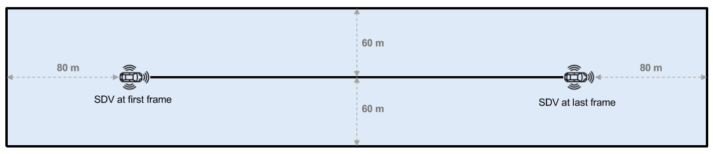
図7：提案するシーン表現の関心領域。
図中ラベル：SDV at first frame＝最初のフレームにおける SDV、SDV at last frame＝最後のフレームにおける SDV
ニューラル特徴場（NFF）の詳細：静的シーンとアクターの両方について特徴グリッドから幾何 \(s\) と特徴記述子 \(\mathbf{f}\) を得るために（本論文の式1）、\(f_{\text{bg}}\) と \(f_{\mathcal{A}}\) で表される 2 つのネットワークを用いる。これらのネットワークはそれぞれ 2 つのサブネットワークからなる。1 つ目のサブネットワークは、補間された特徴 \(\{\mathtt{interp}(\mathbf{x}, \mathcal{G}^l)\}_{l=1}^L\) を受け取り、幾何 \(s\)（符号付き距離値）と中間的な幾何特徴を予測する MLP である。2 つ目のサブネットワークは、中間的な幾何特徴と視点の符号化を入力として受け取り、ニューラル特徴記述子 \(\mathbf{f}\) を予測する MLP である。レンダリングされた特徴マップの上に畳み込みニューラルネットワーク \(g_{\text{rgb}}\) を適用し、最終画像を生成する。また、LiDAR 強度用の追加のデコーダ（\(g_{\text{int}}\)）も持つ。
アクターモデルの詳細：動的アクターのトラックレットは与えられると仮定するが、人手でアノテーションされた場合でも不正確なことがあり、ぼやけた結果につながる。そこで、学習中にアクターのトラックレットを洗練することが有利であることがわかった。SE(3) 姿勢の系列 \(\{\mathbf{T}_{\mathcal{A}_i}^t\}_{t=1}^T\) で軌跡が初期化された各動的アクター \(\mathcal{A}_i\) について、各タイムスタンプにおける姿勢の回転成分と並進成分を同時に最適化する。回転成分は 6D 表現［104］を用いてパラメータ化する。また、自動運転のシーンで最も一般的なアクターである車両物体について、前後軸に沿った対称性の事前知識を組み込む。具体的には、正準物体座標系（Front-Left-Up：前・左・上）におけるクエリ点と視線方向をそれぞれ \(\mathbf{x}_{\mathcal{A}_i}\) と \(\mathbf{d}_{\mathcal{A}_i}\) と表す。学習中は、ニューラル特徴場を問い合わせる際に、入力点と視線方向をランダムに反転させる：
\[ \mathbf{x}'_{\mathcal{A}_i} = \begin{pmatrix} 1 & 0 & 0 \\ 0 & -1 & 0 \\ 0 & 0 & 1 \end{pmatrix} \mathbf{x}_{\mathcal{A}_i}, \quad \mathbf{d}'_{\mathcal{A}_i} = \begin{pmatrix} 1 & 0 & 0 \\ 0 & -1 & 0 \\ 0 & 0 & 1 \end{pmatrix} \mathbf{d}_{\mathcal{A}_i} \tag{11} \]
閉ループシミュレーションのためのアクター行動モデル：簡単のため、反実仮想的なアクターの行動はヒューリスティックでモデル化した。本論文では人間が指定した軌跡のみを示したが、知能ドライバモデル（intelligent driver model）［34,78］や深層学習ベースのモデル［29,73］など、アクターの行動を制御する他のモデルを組み込むことは容易に考えられる。
実行時間と計算資源：表7に、31 体のアクターを含むシナリオ（図6の 1 行目）について、A5000 GPU 上での UniSim とベースラインの学習時間・推論時間を報告する。（訳注：本論文の図6は行に分かれた構成ではなく、「図6の 1 行目」が指す図は明確でない。）実行時間は、近年の進展［11,97］やコードの最適化（例えば、カスタマイズした CUDA カーネル）によってさらに最適化できると考えられる。また、画像解像度、送出する LiDAR 光線、および光線に沿ってサンプリングする点の数を調整することで、実行時間と写実性のバランスをとることもできる。
| 学習（時間）↓ | カメラ（FPS）↑ | LiDAR（FPS）↑ | |
|---|---|---|---|
| FVS[57] | ≈ 24 | 0.33 | - |
| NSG[51] | ≈ 20 | 0.06 | - |
| Instant-NGP[46] | 0.11 | 2.60 | - |
| Ours | 1.67 | 1.25 | 11.76 |
表7：学習速度、カメラ画像（1080p）および LiDAR フレーム（1 フレームあたり \(\approx 77k\) 本の光線）の推論速度の比較。（訳注：表中の引用番号 FVS[57]、NSG[51]、Instant-NGP[46] は本論文の参考文献番号と一致しない。本文では FVS＝［64］、NSG＝［56］、Instant-NGP＝［51］である。原表の表記のまま掲載した。）
A.2 ベースラインの実装の詳細
A2.1 Free View Synthesis（FVS）
FVS の重要な構成要素の 1 つは、ワーピングを行うためにプロキシ幾何を必要とすることである。元論文のように COLMAP を用いて Structure-from-Motion を行う代わりに、データ収集プラットフォームがシーンの正確な LiDAR 深度情報を記録しているという事実を活用する。静的シーンについては、動的な点を除去したうえですべてのフレームにわたって LiDAR 点を集約し、それらに対して三角形のサーフェルを作成する。まず 200 個の最近傍点から点ごとの法線を推定し、次に点を \(4cm^3\) のボクセルにダウンサンプリングする［103］。その後、半径 5cm の三角形サーフェルを作成する。これには静止している車両も含まれる。動的物体については、人手でラベル付けした 3D バウンディングボックスを対応付けとして用い、集約した点群からサーフェルを作成する。レンダリング画像の写実性を高めるために、UniSim と同じ敵対的損失も追加しており、これはより高品質な結果の生成に役立つ。
ターゲット画像をレンダリングするには、ワーピング用にいくつかのソース画像を選択する必要がある。学習中は、近傍のフレーム（前 10 フレームと後 10 フレーム）からランダムに選択する。推論時に内挿をテストする際は、最も近い 2 フレームを選択する。車線シフトをテストする際は、現在のフレームの 12 フレーム前から 4 フレーム後まで、4 フレームごとに選択する。複数の設定をヒューリスティックに試し、この設定が通常、性能と効率のより良いバランスを達成することを確認した。ソース画像が少ないと、未観測領域の大きな画像となり、ネットワークがそれをインペイントできないことがある。ソース画像が多いと、幾何の位置ずれによりぼやけた結果となる場合があり、GPU のメモリ不足も起こる。FVS は 2 基の A5000 GPU 上で、学習率 0.0001、バッチサイズ 8 で 50,000 イテレーション学習する。学習中、画像は \(256 \times 256\) のパッチに切り出す。
A2.2 Instant-NGP
Instant-NGP［51］は、効率的なハッシュ符号化、高速化された光線サンプリング、完全融合（fully fused）MLP を導入することで、最先端の NeRF レンダリングを達成している。実験では、PandaSet のシーンを単位立方体全体を占めるようにスケーリングし、単位立方体の外側にある背景領域（例えば、遠方の建物や空）を扱うために aabb_scale を 32 に設定する。aabb_scale を 1、2、4、8、16、32、64 と調整し、32 が最良の性能につながることを確認した。モデルは 20K イテレーション学習し、学習視点上で収束する。しかし、浮遊する粒子や地面上の大きな欠損領域などの明らかなアーティファクトがあることがわかった。これは、放射輝度と幾何の曖昧性［100］と、密な屋内シーンと比べて走行シナリオでは視点が疎で互いに離れており限られていることに起因する。そこで、より良い外挿（例えば車線シフト）のために幾何を改善するべく、元の手法を LiDAR 深度による教師信号で拡張する。具体的には、記録された LiDAR データを集約し、サーフェル三角形表現を作成する。FVS の実装で述べたものと同じサーフェルアセット生成パイプラインに従う（A2.1 節を参照）。次に、サーフェルメッシュ表現を用いて、各カメラ学習視点で深度画像をレンダリングする。レンダリングした物体マスクを用いて動的アクターを無視することも試みたが、すべての動的アクターが除去されるため PSNR の点で性能が悪化した。実験には公式リポジトリ1（commit id: ca21fd399d0eec4d85fd31ac353116bc088f3f75、2022年10月19日）を用いる。
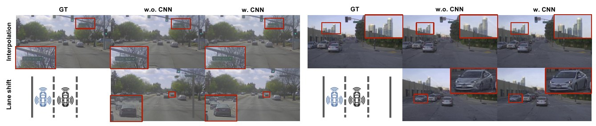
図8：CNN デコーダの効果。畳み込み RGB デコーダは、レンダリング画像をよりきれいにし、より細部を学習するのに役立つ。
図中ラベル：GT＝正解、w.o. CNN＝CNN なし、w. CNN＝CNN あり、Interpolation＝内挿、Lane shift＝車線シフト
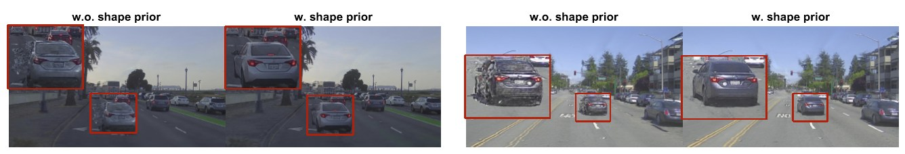
図9：アクター形状事前分布の効果。SDV の車線変更後に見える、車両の未観測の側面を示す。アクター形状事前分布を組み込むことで、車両の未観測の側面を再構成しやすくなる。
図中ラベル：w.o. shape prior＝形状事前分布なし、w. shape prior＝形状事前分布あり
A2.3 Neural Scene Graph（NSG）
GitHub 上のコードベース2を用い、モデルと学習パラメータにはデフォルト設定を採用する。データの前処理では、動的な車両のみを物体ノードとみなし、静止している車両は背景の一部とみなす。また、メモリの制約のため、ログ中で最も多く登場する 5 体の動的アクターのみを選択する。本研究の画像データは KITTI のデータ（\(1242 \times 375\)）より高解像度（\(1920 \times 1080\)）であるため、アクター数をより多くすると、128GB メモリのマシン上でデータ読み込み中にメモリ不足になることがわかった。NSG は、カメラの視線方向に沿った小さな移動しかない前方向きのシナリオでのみうまく機能する。背景点のサンプリングを増やし、モデルサイズを大きくすることで背景のモデル化を改善しようと試みた。しかし、視覚的品質に大きな改善は見られず、計算コストもはるかに高くなった。そのため、デフォルト設定を用いることにした。
A2.4 LiDARsim
OptiX レイトレーシングエンジン［58］に基づいて LiDARsim を再実装する。まず［46］に従ってアセットバンクを作成する。具体的には、背景アセットについては、すべてのフレームにわたって LiDAR 点を集約し、3D バウンディングボックスのアノテーションを用いてすべてのアクターを除去する。動的アクターについては、物体中心座標系でバウンディングボックス内の LiDAR 点を集約する。次に、半径 \(20cm\) 内の 200 個の最近傍点から点ごとの法線を推定し、平坦な地面を再構成するために法線を上向きにそろえる。LiDAR 点を 8cm のボクセルにダウンサンプリングし、推定した法線に従って点ごとの三角形面（半径 \(10cm\)）を作成する。なお、上記の後処理の間、点ごとの強度値も追跡している点に注意されたい。アセットバンクが与えられると、背景とすべてのアクターを元の位置に配置し、光線と三角形の交差計算のためにシーンを LiDAR 座標系へ変換する。LiDAR の写実性の実験では、学習フレーム（\(0, 2, 4, \cdots, 78\)）を用いてサーフェルアセットを作成し、評価用に取り分けたフレーム（\(1, 3, 5, \cdots, 79\)）で実際の LiDAR 光線を用いてレイキャスティングを行った。知覚の評価と学習では、全 80 フレームを用いてアセットを作成し、レイキャスティングを行う。実世界のシミュレーションでは実際の LiDAR 光線を得ることができないため、それを用いる代わりに、公開文書と生の LiDAR 情報3に基づいてセンサの内部パラメータ（例えば、ビーム角、方位角分解能など）を設定する。
脚注2：https://github.com/princeton-computational-imaging/neural-scene-graphs
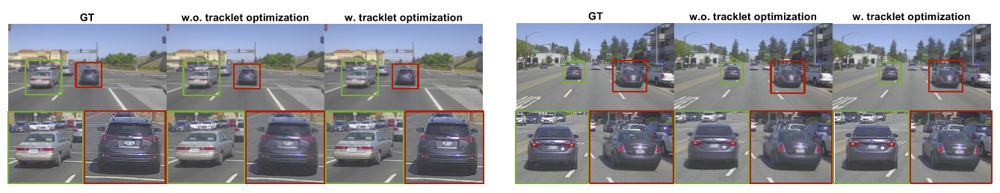
図10：トラックレット洗練の効果。トラックレットの洗練は、動的アクターの鮮明な細部の学習に役立つ。
図中ラベル：GT＝正解、w.o. tracklet optimization＝トラックレット最適化なし、w. tracklet optimization＝トラックレット最適化あり
A.3 UniSim の実験の詳細
A3.1 画像類似度の指標
PandaSet のすべてのログで NSG を実行するには計算資源が限られていたため、画像類似度の評価には 10 シーン（001,011,016,028,053,063,084,106,123,158）を選んだ。これらのシーンには市街地と郊外の両方の多様な領域が含まれ、夜間のログ 1 本（063）と、動的アクターを含まないログ 1 本（028）が含まれる。これら 10 シーンは、次節で述べる知覚の検証用に選んだ 24 シーンの部分集合である。
A3.2 知覚の評価と学習
自律システムがどのように知覚するかという観点でセンサシミュレーションが写実的かどうかを調べるために、まず知覚タスクの領域ギャップを分析する。具体的には、最先端のカメラベースの鳥瞰図（BEV）検出モデル BEVFormer［40］を活用し、PandaSet 全体で評価する。公式の学習／検証分割は存在しないため、地理的な位置、時間帯の範囲、昼夜の多様性を考慮して、PandaSet を学習セットと検証セットとしてそれぞれ 79 シーケンスと 24 シーケンスに分割する。具体的には、シーケンス 001,011,013,016,017,028,029,032,053,054,063,065,068,072,084,086,090,103,106,110,112,115,123,158 を検証セットとして選び、残りの 79 シーケンスを学習用とする。
2 つの設定を検討する：（a）Real2Sim：実データで学習した知覚モデルをシミュレーションデータで評価する。（b）Sim2Real：シミュレーションデータで知覚モデルを学習し、実データでテストする。具体的には、Real2Sim では 24 本のシミュレーション検証ログで実データのモデルを評価し、Sim2Real では 79 本のシミュレーション学習ログで知覚モデルを学習する。データ拡張の実験では、まずすべてのシミュレーションのバリエーション（ログリプレイ、左へ 0.5 m および 2.0 m の車線シフト）を用いて検出器を学習する（Sim）。次に、それらのシミュレーションデータを実データと組み合わせて（Sim + Real）検出器を再学習する。なお、すべての実験において、UniSim とその他のベースラインはすべての画像フレーム（すなわちフレーム 0〜79）で学習する。表5（本論文）に示すとおり、UniSim の車線シフトのバリエーションを組み込むことで、実データのみで学習する場合と比べて、自律システムはより優れた検出性能を達成する。シミュレーションデータを十分に活用する方法（例えば、高度なアクター行動シミュレーション、アクターの挿入、カメラの回転など）に関するより厳密な研究は今後の課題とする。
BEVFormer の実装の詳細：PandaSet での学習と評価のために、公式リポジトリ4を適応させる。具体的には、前方カメラによる単一フレームの車両検出に焦点を当てる。学習と評価の際、カメラの視野外にあるアクターは無視する。モデルは FLU 規約（\(x\)：前方、\(y\)：左、\(z\)：上）の車両座標系で学習する。関心領域は \(x \in [0, 80m], y \in [-40m, 40m], z \in [-2m, 6m]\) に設定する。メモリの制限のため、GPU あたりのバッチサイズ 2 で BEVFormer-small アーキテクチャ5を採用する。AdamW オプティマイザ［44］を用い、コサイン学習率スケジュール6で 20 エポック学習する。各モデルの学習には 2× RTX A5000 で約 12 時間かかる。データ拡張の実験では、シミュレーションデータをオフラインで生成し、データセットが元の PandaSet の 3〜4 倍の大きさになるため、モデルを 10 エポック学習する。
脚注4：https://github.com/fundamentalvision/BEVFormer
脚注6：https://pytorch.org/docs/stable/generated/torch.optim.lr_scheduler.CosineAnnealingLR.html
A3.3 開ループの自律システム評価
評価セット：本論文の 4.5 節では、PandaSet のシーン上で開ループの自律システム指標を計算した。予測モジュール［14］と計画モジュール［66］は動作に地図情報を必要とするが、PandaSet には地図情報がない。そこで、自律システムの検証セットに含まれる PandaSet の 9 シーンについて地図をアノテーションした。これらは、本論文の 4.3 節で定量評価に用いた 10 シーンの部分集合（063 を除く）であり、地図のアノテーションを可能にする PandaSet の LiDAR セマンティックセグメンテーションも備えている。
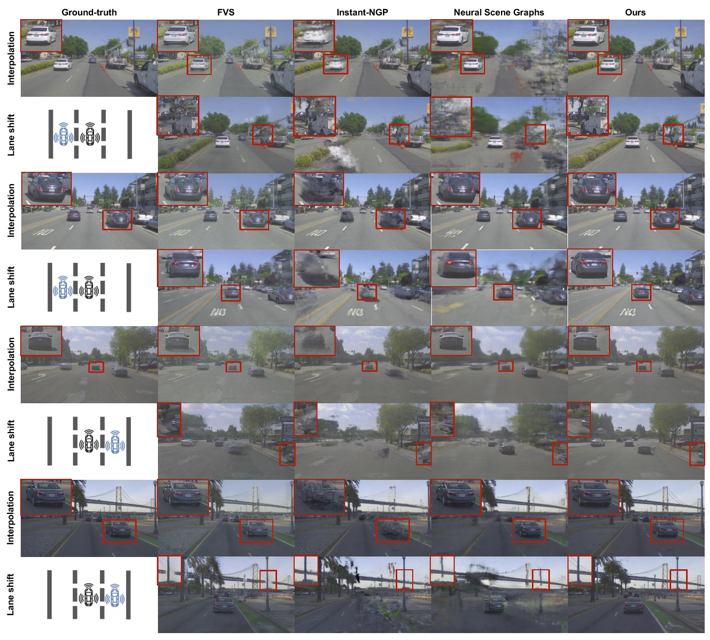
図11：さらなる例での定性的比較。内挿と車線シフトの両方のテスト設定におけるレンダリング結果を示す。
図中ラベル：Ground-truth＝正解、Ours＝提案手法、Interpolation＝内挿、Lane shift＝車線シフト
開ループの自律システム指標：ここでは、各モジュールについて計算する自律システムの指標をより詳しく説明する。
検出については、検出一致率（detection agreement）と呼ぶ指標を計算する。検出一致率では、実データで学習した BEVformer モデルを実画像とシミュレーション画像で評価し、実画像とシミュレーション画像それぞれの検出出力を得る。実画像の検出をラベルとし、シミュレーション画像の検出と（ラベルとした）実画像の検出との間の平均適合率（AP）を計算して最終結果として報告する。検出一致率は IoU（intersection-over-union）0.3 で計算する。この指標は、シミュレーションされたセンサデータが、各フレームで実データと同じ真陽性と偽陽性を生成するかどうかを測定する。
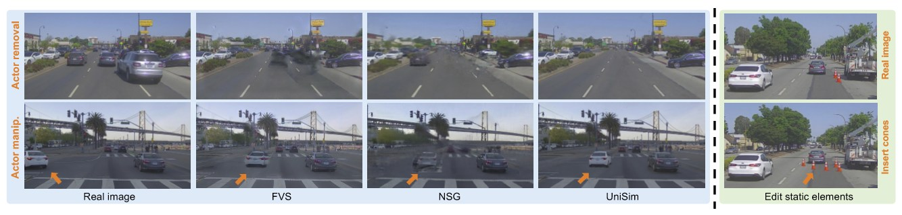
図12：左：アクターの除去（上）と操作（下）におけるベースラインとの比較。右：コーンを複製することによる静的要素の編集。
図中ラベル：Actor removal＝アクターの除去、Actor manip.＝アクターの操作、Real image＝実画像、Edit static elements＝静的要素の編集、Insert cones＝コーンの挿入
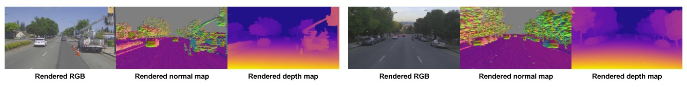
図13：レンダリングされたシーン幾何。各例について、左から右へ：レンダリングされた RGB 画像、レンダリングされた法線マップ、レンダリングされた深度マップ。
図中ラベル：Rendered RGB＝レンダリングされた RGB、Rendered normal map＝レンダリングされた法線マップ、Rendered depth map＝レンダリングされた深度マップ
予測については、予測の平均変位誤差を計算する。ここで、動き予測の軌跡は 10Hz の頻度で 6 秒先までのものである。自律システムに選んだ予測モジュールは Cui ら［14］によるもので、ラスタ化した地図と、検出された各アクターの過去 5 秒間の履歴トラックを入力として受け取り、各アクターについて 6 秒先までのマルチモーダルな軌跡（モード数 = 6）を出力する。予測モデルが実画像に対して生成した各アクターの最も尤もらしい予測モードをラベルとする。次に、ラベルと予測の間で対応するアクターを特定し、そのアクターに対する 6 つの予測にわたる最小平均変位誤差（minADE）を計算することで、シミュレーション画像によって生成された予測出力を評価する。各シミュレーション手法について、F1 スコアが最大となる点での minADE を報告する。ここで真陽性は、シミュレーションされたセンサデータと実センサデータの間で IoU=0.3 で対応付けられた検出アクターとして定義する。
計画については、計画一貫性の指標を計算する。各タイムステップで、自律システムのモデルは予測出力と地図情報が与えられたときに実行する 5 秒間の計画を出力する。各タイムステップにおいて、実画像で実行した場合とシミュレーション画像で実行した場合との 5 秒後の終点の間の最終変位誤差を計算する。
A.4 追加の実験と分析
A4.1 アブレーション研究
畳み込み RGB デコーダ：畳み込み RGB デコーダは、空間的な関係の推論によって全体的な画質を向上させ、モデルの容量を増やす。図8に、内挿設定と車線シフト設定における視覚的な比較を示す。図から、畳み込み RGB デコーダがレンダリング画像をよりきれいにし、より多くの細部を保持するのに役立つことがわかる。
アクター形状事前分布：より良いアセットを学習するために、ハイパーネットワークと対称性の事前知識を組み込む。図9は、これらのアクター事前分布を組み込むことで、SDV が車線シフトを行ったときに車両の未観測領域を再構成しやすくなることを示している。
トラックレットの洗練：図10に、トラックレットの最適化の有無でモデルを学習した場合の視覚的な比較を示す。トラックレットを最適化することで、動的アクターの再構成が改善され、その細部が鮮明になる。
A4.2 追加のカメラシミュレーション結果
写実性の評価：ベースラインモデルとの定性的比較のさらなる例は図11を参照されたい。内挿と車線シフトの両方のテスト設定におけるレンダリング結果を示している。また、アクターの除去と操作に関するベースラインとの比較を図12左に示す。さらに、レンダリングした法線（SDF \(s\) の正規化した勾配）と深度マップを図13に可視化する。
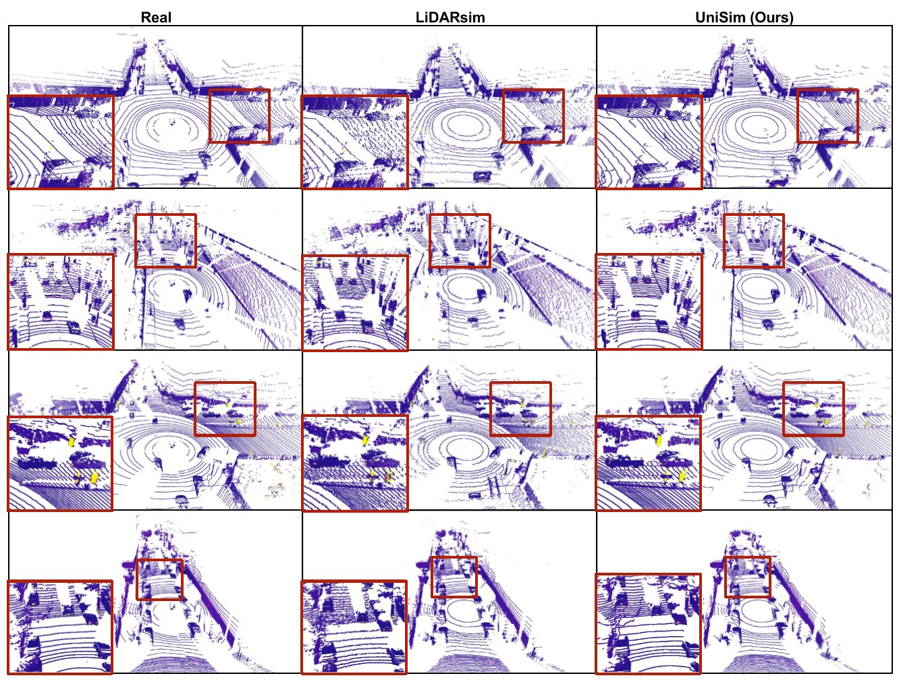
図14：PandaSet における LiDAR シミュレーションの比較。左：実際の LiDAR スイープ。中央：LiDARsim［46］によるシミュレーション点群。右：UniSim によるシミュレーション点群。LiDARsim と比べて、提案するニューラルレンダリング手法は、ノイズが少なくビームリングがより連続的で、実際の LiDAR スキャンにより近い、忠実度の高い LiDAR シミュレーションを生成する。UniSim のシミュレーション結果は、自律システムがどのように知覚するかという観点でより写実的である（すなわち、Real2Sim と Sim2Real の領域ギャップがより小さい）ことに注目されたい。
図中ラベル：Real＝実データ、UniSim (Ours)＝UniSim（提案手法）
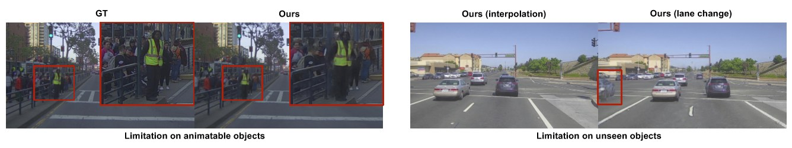
図15：UniSim の限界。左：アニメーションをモデル化していないため、提案手法はアニメーション可能な物体に対してぼやけた結果を学習してしまう。右：提案手法は、SDV の車線変更を行った後に完全に未観測の物体をレンダリングすることが難しい。
図中ラベル：GT＝正解、Ours＝提案手法、Limitation on animatable objects＝アニメーション可能な物体に関する限界、Ours (interpolation)＝提案手法（内挿）、Ours (lane change)＝提案手法（車線変更）、Limitation on unseen objects＝未観測物体に関する限界
シーン要素の編集：動的アクターと同様に、バウンディングボックスのアノテーションを用いて静的要素を表現・編集することができる。図12右は、コーンを新しい位置に複製して新しいシナリオを作成した例を示している。
| Real2Sim（リプレイ） | mAP | AP@0.1 | AP@0.3 | AP@0.5 | AP@0.7 |
|---|---|---|---|---|---|
| FVS | 37.2 | 63.4 | 46.7 | 27.1 | 11.5 |
| Instant-NGP | 22.6 | 40.9 | 28.8 | 15.4 | 5.4 |
| UniSim | 40.2 | 67.2 | 50.7 | 30.8 | 12.2 |
| Real | 40.9 | 68.1 | 51.4 | 31.3 | 12.7 |
表8：リプレイ設定における Real2Sim の領域ギャップ。（訳注：本表の FVS の mAP は 37.2 であるが、本文の表4では同じ設定の FVS の Real2Sim の値が 36.9 となっており、一致しない。他の値は表4と一致する。）
| Real2Sim（車線シフト） | mAP | AP@0.1 | AP@0.3 | AP@0.5 | AP@0.7 |
|---|---|---|---|---|---|
| FVS | 30.3 | 54.1 | 38.9 | 21.7 | 6.6 |
| Instant-NGP | 18.1 | 34.3 | 22.2 | 11.9 | 3.8 |
| UniSim | 37.0 | 63.6 | 47.8 | 27.2 | 9.4 |
表9：車線シフト設定における Real2sim の領域ギャップ。
| Sim2Real（リプレイ） | mAP | AP@0.1 | AP@0.3 | AP@0.5 | AP@0.7 |
|---|---|---|---|---|---|
| FVS | 38.7 | 66.2 | 48.8 | 28.7 | 11.1 |
| Instant-NGP | 34.0 | 62.3 | 43.9 | 22.9 | 6.7 |
| UniSim | 39.9 | 67.6 | 51.2 | 29.4 | 11.4 |
| Real | 40.9 | 68.1 | 51.4 | 31.3 | 12.7 |
表10：リプレイ設定における Sim2Real の領域ギャップ。
| Sim2Real（車線シフト） | mAP | AP@0.1 | AP@0.3 | AP@0.5 | AP@0.7 |
|---|---|---|---|---|---|
| FVS | 32.2 | 59.9 | 41.5 | 21.0 | 6.5 |
| Instant-NGP | 26.5 | 54.3 | 34.8 | 13.9 | 2.9 |
| UniSim | 37.1 | 64.9 | 47.5 | 26.4 | 9.5 |
表11：車線シフト設定における Sim2Real の検出性能。
A4.3 追加の LiDAR シミュレーション結果
LiDAR シミュレーションの写実性を調べるために、ログリプレイ設定において UniSim を最先端の手法 LiDARsim［46］と比較する。図14は、実際の LiDAR スキャン（左）と、LiDARsim および UniSim によるシミュレーション LiDAR スキャンの定性的な例を示している。LiDARsim は集約したサーフェルメッシュに対してレイキャスティングを行い、不完全なビームリングとノイズの多いスキャンを生成する。これは、元の LiDAR 点から作成されたサーフェルメッシュが、ノイズを含む法線推定と不完全な形状を持ちうるためである。LiDARsim と比べて、UniSim がシミュレーションした LiDAR スイープはより正確で滑らかである。これは、提案するニューラル表現が基礎となる幾何をよりよく捉えるためである。さらに、UniSim は強度値をより滑らかかつ正確にシミュレーションできる（図14の 3 行目を参照）。
A4.4 カメラシミュレーションに関する追加の知覚評価と学習
参考のために、知覚の評価と学習に関する詳細な検出指標を報告する。具体的には、異なる IoU 閾値（0.1、0.3、0.5、0.7）における平均適合率（AP）を報告する。平均適合率の平均（mAP）は \(\text{mAP} = (\text{AP@0.1} + \text{AP@0.3} + \text{AP@0.5} + \text{AP@0.7})/4.0\) で計算する。Real2Sim の結果を表8（リプレイ）と表9（車線シフト）に示す。Sim2Real の結果を表10（リプレイ）と表11（車線シフト）に示す。データ拡張の実験を表12に示す。
| データ拡張 | mAP | AP@0.1 | AP@0.3 | AP@0.5 | AP@0.7 |
|---|---|---|---|---|---|
| Real | 40.9 | 68.1 | 51.4 | 31.3 | 12.7 |
| Sim (FVS) | 39.2 | 68.0 | 50.1 | 28.5 | 10.1 |
| Sim (Instant-NGP) | 32.4 | 60.7 | 41.1 | 21.3 | 6.6 |
| Sim (UniSim) | 41.4 | 71.4 | 54.7 | 29.5 | 10.1 |
| Real + Sim (FVS) | 41.1 | 71.6 | 53.6 | 29.6 | 9.6 |
| Real + Sim (Instant-NGP) | 40.1 | 70.1 | 51.5 | 29.0 | 9.9 |
| Real + Sim (UniSim) | 42.9 | 71.9 | 54.3 | 32.7 | 12.8 |
表12：シミュレーションによる実データの拡張。UniSim のデータのみを用いて知覚モデルを学習すると、すべての実データで学習するよりもさらに良い性能となる。UniSim によるデータ拡張は大きな性能向上をもたらす。これに対し、ベースラインによるデータ拡張では向上はわずかであるか、性能を損なう。
| Real2Sim | mAP | AP@0.1 | AP@0.3 | AP@0.5 | AP@0.7 | AP@0.8 |
|---|---|---|---|---|---|---|
| LiDARsim | 74.9 | 88.3 | 86.3 | 82.7 | 69.1 | 48.3 |
| UniSim | 77.0 | 90.1 | 88.4 | 84.4 | 71.5 | 50.8 |
| Real | 80.8 | 93.6 | 92.0 | 88.0 | 75.2 | 55.2 |
表13：LiDAR シミュレーションにおける Real2Sim の検出性能。
| Sim2Real | mAP | AP@0.1 | AP@0.3 | AP@0.5 | AP@0.7 | AP@0.8 |
|---|---|---|---|---|---|---|
| LIDARsim | 75.9 | 91.6 | 89.9 | 85.6 | 70.6 | 42.0 |
| UniSim | 77.9 | 92.0 | 89.8 | 85.4 | 72.0 | 50.3 |
| Real | 80.8 | 93.6 | 92.0 | 88.0 | 75.2 | 55.2 |
表14：LiDAR シミュレーションにおける Sim2Real の検出性能。
A4.5 LiDAR シミュレーションのための知覚の評価と学習
カメラシミュレーションに加えて、シミュレーションされた LiDAR が、既存の SoTA LiDAR シミュレータ LiDARsim［46］と比べて知覚タスクの領域ギャップを縮小するかどうかも分析する。LiDAR ベースの鳥瞰図検出モデル PIXOR［91］を活用し、Real2Sim と Sim2Real の設定をテストした。カメラの知覚モデルと同じ学習／検証分割を用い、リプレイ設定を考慮した。具体的には、すべてのフレームを用いてモデルを学習し（LiDARsim ではアセットを作成し）、本研究で近似したセンサ構成でテストする。関心領域（ROI）を \(x \in [0, 80m], y \in [-40m, 40m], z \in [-2m, 6m]\) とした、マルチスイープ（5 フレーム）の車両検出に焦点を当てる。異なる IoU 閾値（0.1、0.3、0.5、0.7、0.8）における平均適合率（AP）を報告する。平均適合率の平均（mAP）は \(\text{mAP} = (\text{AP@0.1} + \text{AP@0.3} + \text{AP@0.5} + \text{AP@0.7} + \text{AP@0.8})/5.0\) で計算する。
表13と表14に示すとおり、UniSim は LiDARsim と比べて、Real2Sim と Sim2Real の両方で、特に IoU 閾値が厳しい場合（例えば AP@0.7、AP@0.8）に、より小さい領域ギャップをもたらす。これは、提案手法がシミュレーションと実世界の間のギャップをさらに埋め、自律システムの評価と学習の改善に役立ちうることを示している。両方の合成データを生成する同じ UniSim モデルを用いて、カメラセンサと LiDAR センサの知覚モデルの性能について 2 つの分析を別々に行った。今後の調査としては、UniSim の領域ギャップをさらに理解するために、マルチセンサの知覚実験を行うことが挙げられる。
A4.6 その他の検討
新規視点合成で一般的に用いられるいくつかの技術は、初期の試みにおいて、本研究のアーキテクチャとデータ設定では大きな改善をもたらさないことを確認した。具体的には、階層的なサンプリングや細粒度のサンプリングは写実性を大きく向上させず、処理速度を大幅に低下させた。これはおそらく、シーンの大部分が自動運転車から遠く離れているためである。また、単一カメラの単一のログ断片の中では露出が変化しないため、フレームごとに露出を最適化しても写実性は向上しなかった。マルチカメラでの学習も試みたが、PandaSet の側方カメラのいくつかはキャリブレーションがずれており、露出もわずかに異なることがわかった。この設定でカメラ姿勢と露出を最適化しても改善は得られなかったが、これはおそらく 8 秒間の単一ログからのデータが限られているためである。さらに、学習イテレーションを増やしたりアーキテクチャを深くしたりしても大きな改善は得られず、むしろモデルの複雑さが増した。
A.5 限界と今後の課題
UniSim にはいくつかの限界がある。モデル化された放射輝度は照明を表現に焼き込んでしまうため、提案するニューラル特徴グリッドは照明の変化をレンダリングできない。今後の課題には、シーンの照明［6,71,102］と天候の明示的なモデル化と操作が含まれる。また、アニメーション（例えば、方向指示器、信号機）やアクターの変形（例えば歩行）もモデル化しておらず、これに取り組んだ研究［57,59,90,99］のアイデアを取り入れたいと考えている。さらに、以前は視野外にあった領域をレンダリングする際にアーティファクトが生じる。図15にこれらの現象の定性的な可視化を示す。この方向の今後の研究によって、センサシミュレーションの写実性がさらに向上することを期待する。